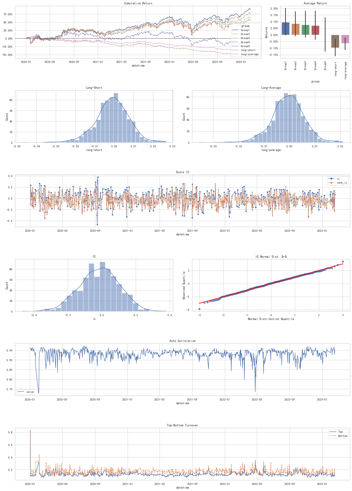
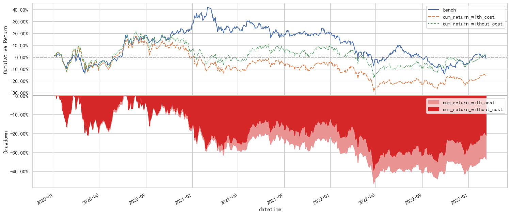
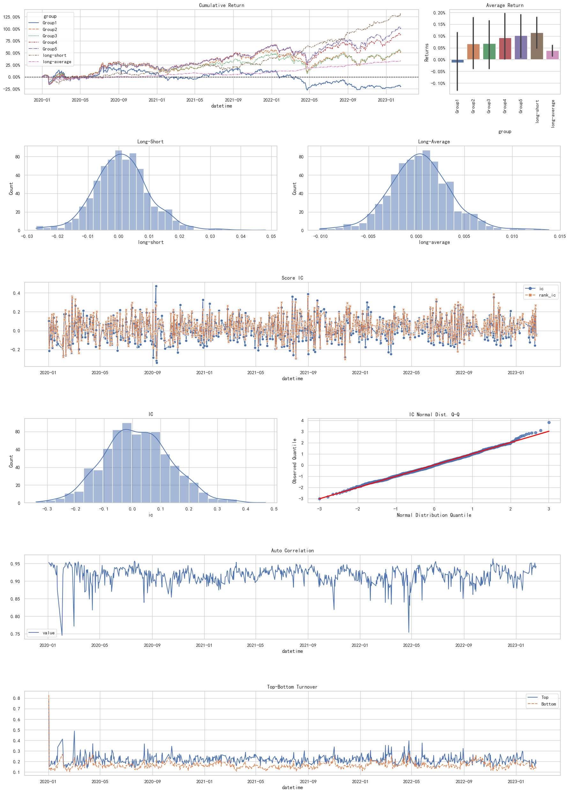
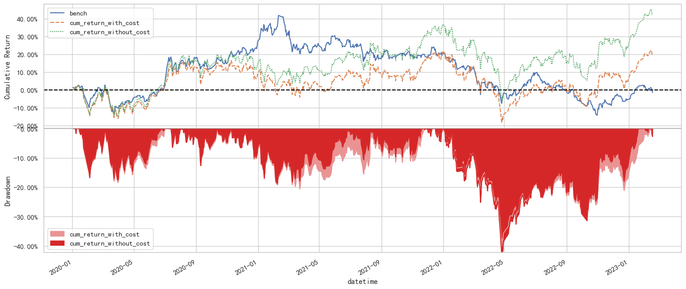
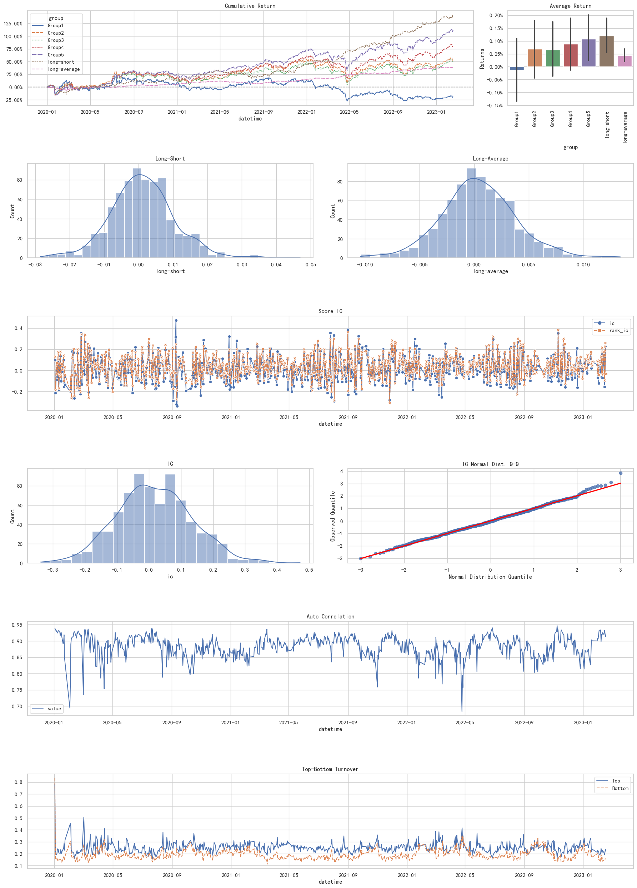
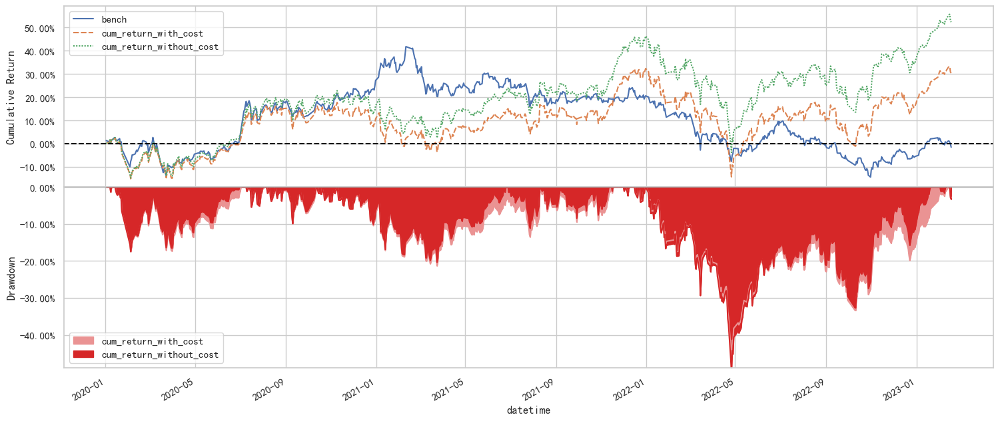
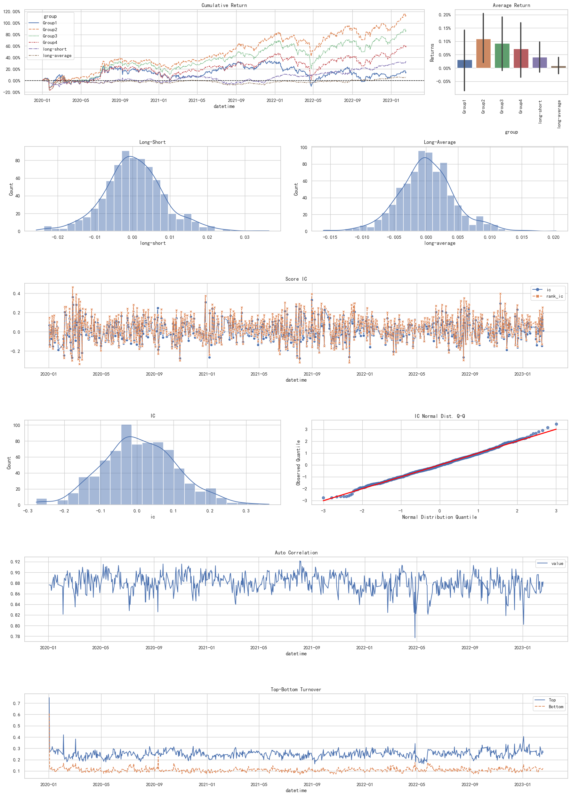
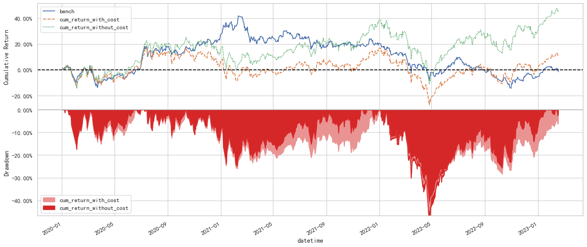
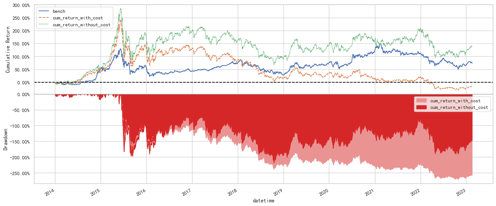
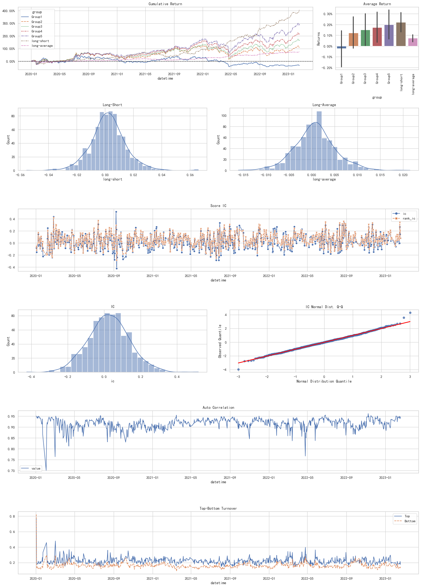

引言#
本文参考:
20220611-方正证券-多因子选股系列研究之四：个股动量效应识别及“球队硬币”因子构建
Moskowitz T J. Asset pricing and sports betting[J]. Journal of Finance, Forthcoming, 2021.
从个股角度来看，由于部分股票在月度频率上呈现的是动量效应，正是这些动量效应的存在，削弱了传统反转因子的效果。因此，如何有效识别个股的动量效应，并将其因子值加以翻转，使其成为名副其实的反转因子，是改进传统反转因子表现的重要途径之一。
本文中我们将使用日度开盘价、收盘价和换手率等数据，分别从日间 涨跌幅、日内涨跌幅和隔夜涨跌幅的角度考察，通过简单的变换，在三种维度上都实现了对传统反转因子的明显改进，并最终构建了“球 队硬币”因子。“球队硬币”因子的选股能力和稳定性远超常规的日频量价因子，甚至超过了大部分分钟数据构造的选股因子。
对应理论运用#
“可知性”#
Moskowitz（2021）论述了当人们抛一枚硬币时，如果上次抛出了正面，人们倾向于猜测下次是反面，这是因为人们对抛硬币这件活动本 身比较了解，对于其发生的概率比较确定，即“抛硬币”这件事的 “可知性”较高，因此人们会以“反转”的眼光来看待“抛硬币”；而 当一个新赛季开始时，如果让人们猜测哪只球队会夺冠，由于人们对 新赛季的球队、球队的成员和团队磨合等不是很了解，即“冠军是 谁”这件事的“可知性”较低，因此只能以这些球队的历史成绩来考 察它们，此时人们更倾向于猜测上赛季的冠军，依旧会在本赛季夺冠，总结来说，人们会以“动量”的眼光来看待“球队夺冠”。
“可知性”与过度买卖#
然而当上述逻辑应用于股票时，却常常事与愿违，具体而言：
当投资者将某只股票视为“球队”时，认为其将来会发生动量效 应，因此，如果该股票最近上涨，投资者认为它未来会继续上涨，就 会超买它，进而导致其未来股价出现回落；反之，如果该股票最近下 跌，投资者认为它未来会继续下跌，就会纷纷抛售超卖，导致其未来 补涨。因此那些被视为“球队”的股票，最终可能实际发生的是反转效应。
当投资者将某只股票视为“硬币”时，认为其将来会发生反转效 应，因此，如果该股票最近上涨，投资者认为它未来会转为下跌，就 会超卖，进而导致其未来补涨；反之，如果该股票最近下跌，人们认 为它未来会转为上涨，就会超买，进而导致其股价未来回落。因此那 些被视为“硬币”的股票，最终可能实际发生的是动量效应。 因此判断一只股票将发生动量效应还是反转效应的核心，就变成了判 断一支股票是“硬币”还是“球队”，即判断一支股票走势的“可知性”。
对于这一判断标准，在 Moskowitz（2021）的论文中，给出的指标是依据公司是否发布了业绩预告，即认为发布了业绩预告的公司，其 “可知性”就会提高，投资者对于其未来走势就有了清晰的判断。
本文我们选择用交易类指标作为划分的标准，对日间涨跌幅、日内涨跌 幅和隔夜涨跌幅进行改进，以期得到更为理想的选股效果。 具体而言，我们认为波动率和换手率的变化量可以代表一支股票表现 的“可知性”，即更像硬币还是更像球队。波动率低，表明股价走势相对稳定，投资者对其未来趋势做出判断也更加容易，而换手率降低，则表示投资者对股票的意见分歧逐渐减少，也是“可知性”提高 的表现。
总结来说，
硬币型: 波动率低的股票和换手率下降的股票，“可知性”更高，属于硬币类型的股票，未来发生动量效应的概率更大；
球队型: 波动率高的股票和换手率增长的股票，“可知性”更低，属于球队类型的股票，未来发生反转效应的概率更大。
因子构建方法说明#
日间反转#
日间反转-波动翻转因子(interday_volatility_reverse)#
每天计算所有股票的日间收益率;
每月月底计算最近20天的日间收益率的均值和标准差，作为当月的日间收益率和日间波动率;
比较每只股票的日间波动率与市场截面均值的大小关系，将日间 波动率小于市场均值的股票，视为“硬币”型股票，由于未来其发生 动量效应的概率更大，因此我们将其当月日间收益率乘以-1；而日间波动率大于市场均值的股票，视为“球队”型股票，其未来将发生反转效应的概率更大，其因子值保持不变。我们将变换后的因子作为修正后的新反转因子，记为“日间反转-波动翻转”因子。
日间反转-换手翻转因子(interday_turnover_rate_reverse)#
计算每支股票t日换手率与t-1日换手率的差值，作为t日换手率的变化量;
将每只股票的换手率变化量与当日全市场的换手率变化量的均值做比较，我们认为换手率变化量高于市场均值的股票为“球队”型股票，其未来将大概率发生反转效应；换手率变化量低于市场均值的，为“硬币”股票，未来将大概率发生动量效应;
我们计算每只股票 t 日的日间收益率，将“硬币”型股票的日间收 益率乘以-1，而“球队”型股票的日间收益率保持不变。记变化后的日间收益率为“翻转收益率”;
每月月底，计算最近20天的“翻转收益率”的均值，我们将变换后的因子作为经修正后的新反转因子，记为本月的“日间反转-换手翻转”因子。
修正日间反转因子(revise_interday_reverse)#
“日间反转-波动翻转”因子和“日间反转-换手翻 转”因子等权合成
日内反转#
日内反转-波动翻转因子(intraday_volatility_reverse)#
每天计算每只股票的日内收益率;
每月月底计算最近 20 天的日内收益率的均值和标准差，作为当月的日内收益率和日内收益率的波动率;
比较每只股票的日内收益率的波动率与市场截面均值的大小关 系，将日内收益率的波动率小于市场均值的股票，视为“硬币”型股 票，其未来发生动量效应的概率更大，因此我们将其当月日内收益率 乘以-1；而日内收益率的波动率大于市场均值的股票，视为“球队” 型股票，其未来将发生反转效应的概率更大，其当月日内收益率保持不变。
日内反转-换手翻转因子(intraday_turnover_rate_reverse)#
计算每支股票 t 日换手率与 t-1 日换手率的差值，作为 t 日换手率 的变化量;
将每只股票的换手率变化量与当日所有股票的换手率变化量的均 值做比较，我们认为换手率变化量高于市场均值的，为“球队”股 票，未来将发生反转；换手率变化量低于市场均值的，为“硬币”股票，未来将发生动量;
我们计算每只股票 t 日的日内收益率，将“硬币”型股票的日内收 益率乘以-1，而“球队”型股票的日内收益率不变。记变化后的日内收益率为“翻转日内收益率”;
每月月底，计算最近 20 天的“翻转日内收益率”的均值，我们将 变换后的因子作为修正后的新日内反转因子，记为本月的“日内反转-换手翻转”因子。
修正日内反转因子(revise_intraday_reverse)#
“日内反转-波动翻转”因子和“日内反转-换手翻 转”因子等权合成
隔夜距离#
隔夜距离的定义#
计算每只股票t日的隔夜收益率,即使用t日开盘价除以t-1日的收盘价再减1;
每月月底,计算过去20个交易日的隔夜收益率的平均值,记为本月的传统隔夜涨跌因子;
隔夜涨跌幅是一个“两边差，中间好”的因子，其逻辑通常可以解释为，开盘集合竞价里，不论方向，所有报价过于激进的交易者，都存在发生反应过度的风险。因此开盘时平静开盘是最好的。基于上述逻辑，我们对隔夜涨跌幅进行第一步改进——均值距离化。 即我们认为，隔夜涨跌幅的市场平均水平是最平静的，因此我们计算 每只个股的隔夜涨跌幅与市场平均水平的差值，然后取绝对值，表示这只个股与“最平静”之间的距离，并将其记为“隔夜距离”因子。
隔夜反转-波动翻转因子(overnight_volatility_reverse)#
每天计算每只股票的“隔夜距离”;
每月月底计算最近 20 天的隔夜距离的均值和标准差，作为当月的 “隔夜距离”和“隔夜距离波动率”;
比较每只股票的“隔夜距离波动率”与市场截面均值的大小关 系，将“隔夜距离波动率”小于市场均值的股票，视为“硬币”型股 票，其未来发生动量效应的概率更大，因此我们将其当月“隔夜距离”取相反数；而“隔夜距离波动率”大于市场均值的股票，视为 “球队”型股票，其未来将发生反转效应的概率更大，因此其当月“隔夜距离”保持不变。
隔夜反转-换手翻转因子(overnight_turnover_rate_reverse)#
计算每支股票 t-1 日换手率与 t-2 日换手率的差值，作为 t-1 日换手 率的变化量，然后将该变化量均值距离化，即减去市场均值后再取绝 对值，记为“换手距离”。这一步处理，与隔夜涨跌幅的逻辑类似， 我们认为，t 日开盘越平静越好，而从换手率维度来讲我们希望 t-1 日 的换手率变化量越平静越好，这样的股票 t 日开盘受额外因素影响相对较小，其开盘将会趋于平静;
将每只股票的“换手距离”与当日所有股票的“换手距离”的均 值做比较，我们认为“换手距离”高于市场均值的，为“球队”股 票，未来将发生反转；“换手距离”低于市场均值的，为“硬币”股票，未来将发生动量;
我们计算每只股票 t 日的“隔夜距离”，将“硬币”型股票的“隔 夜距离”乘以-1，而“球队”型股票的“隔夜距离”保持不变。记变化后的“隔夜距离”为“翻转隔夜距离”;
每月月底，计算最近 20 天的“翻转隔夜距离”的均值，我们将变 换后的因子作为经修正后的新隔夜反转因子，记为本月的“隔夜反转-换手翻转”因子。
修正隔夜反转(revise_overnight_reverse)#
“隔夜反转-波动翻转”因子和“隔夜反转-换手翻 转”因子等权合成
球队硬币因子#
“修正日间反转”因子、“修正日内反转”因子和 “修正隔夜反转”因子等权合成，得到“球队硬币”因子
这里我们还尝试将换手率还我自由流通换手率,用以测试因子效果
from typing import List, Tuple
import empyrical as ep
import pandas as pd
import qlib
from FactorZoo import SportBettingsFactor, VolatilityMomentum
from src.build_factor import get_factor_data_and_forward_return
from src.factor_analyze import get_factor_describe, get_factor_group_returns
from src.plotting import plot_cumulativeline_from_dataframe
qlib.init(provider_uri="data/qlib_data", region="cn")
[27860:MainThread](2023-07-19 15:49:24,098) INFO - qlib.Initialization - [config.py:416] - default_conf: client.
[27860:MainThread](2023-07-19 15:49:24,100) INFO - qlib.Initialization - [__init__.py:74] - qlib successfully initialized based on client settings.
[27860:MainThread](2023-07-19 15:49:24,100) INFO - qlib.Initialization - [__init__.py:76] - data_path={'__DEFAULT_FREQ': WindowsPath('D:/WorkSpace/QuantsPlaybook/B-因子构建类/个股动量效应的识别及球队硬币因子/data/qlib_data')}
生成因子#
all_data: pd.DataFrame = get_factor_data_and_forward_return(
SportBettingsFactor,
window=20,
periods=1,
general_names=["interday", "intraday", "overnight"],
)
2023-07-11 16:08:12.116 | INFO | src.build_factor:get_factor_data_and_forward_return:189 - start get base data...
2023-07-11 16:08:30.649 | INFO | src.build_factor:get_factor_data_and_forward_return:192 - base data success!
2023-07-11 16:08:30.650 | INFO | src.build_factor:get_factor_data_and_forward_return:194 - start get next return data...
2023-07-11 16:08:49.103 | INFO | src.build_factor:get_factor_data_and_forward_return:198 - next return data success!
2023-07-11 16:08:49.104 | INFO | src.build_factor:get_factor_data_and_forward_return:199 - start get factor data...
[Parallel(n_jobs=-1)]: Using backend MultiprocessingBackend with 32 concurrent workers.
[Parallel(n_jobs=-1)]: Done 11 out of 14 | elapsed: 39.3s remaining: 10.6s
[Parallel(n_jobs=-1)]: Done 14 out of 14 | elapsed: 1.7min finished
2023-07-11 16:16:41.406 | INFO | src.build_factor:get_factor_data_and_forward_return:204 - factor data success!
2023-07-11 16:16:41.408 | INFO | src.build_factor:get_factor_data_and_forward_return:205 - start merge data...
2023-07-11 16:17:12.611 | INFO | src.build_factor:get_factor_data_and_forward_return:211 - merge data success!
all_data.head()
| interday_volatility_reverse | interday_turnover_rate_reverse | interday_turnover_rate_f_reverse | revise_interday_reverse | intraday_volatility_reverse | intraday_turnover_rate_reverse | intraday_turnover_rate_f_reverse | revise_intraday_reverse | overnight_volatility_reverse | overnight_turnover_rate_reverse | overnight_turnover_rate_f_reverse | revise_overnight_reverse | coin_team | coin_team_f | next_ret | ||
|---|---|---|---|---|---|---|---|---|---|---|---|---|---|---|---|---|
| datetime | instrument | |||||||||||||||
| 2013-02-01 | 000001.SZ | 0.017790 | 0.018352 | 0.018352 | 0.018071 | 0.020224 | 0.017847 | NaN | 0.019035 | 0.002373 | 0.000559 | NaN | 0.001466 | 0.038572 | 0.038572 | -0.023360 |
| 000002.SZ | NaN | NaN | NaN | NaN | NaN | NaN | NaN | NaN | NaN | NaN | NaN | NaN | NaN | NaN | 0.006763 | |
| 000004.SZ | 0.007511 | 0.010310 | 0.010310 | 0.008910 | 0.009922 | 0.007618 | NaN | 0.008770 | 0.002368 | 0.002616 | NaN | 0.002492 | 0.020172 | 0.020172 | -0.015135 | |
| 000005.SZ | 0.002562 | 0.008691 | 0.008691 | 0.005626 | 0.005553 | 0.005756 | NaN | 0.005655 | -0.002932 | 0.002912 | NaN | -0.000010 | 0.011271 | 0.011271 | -0.003247 | |
| 000006.SZ | 0.006217 | 0.013543 | 0.018931 | 0.009880 | 0.003828 | 0.010930 | NaN | 0.007379 | 0.002430 | 0.002629 | NaN | 0.002529 | 0.019789 | 0.025170 | -0.016245 |
# 储存数据
all_data.to_pickle('data/pkl/all_data.pkl')
因子分析#
# 数据读取
all_data:pd.DataFrame = pd.read_pickle('data/pkl/all_data.pkl')
clean_factor_res = get_factor_group_returns(all_data,quantiles=5)
【Interday_Volatility_Reverse】:Dropped 8.1% entries from factor data: 8.1% in forward returns computation and 0.0% in binning phase (set max_loss=0 to see potentially suppressed Exceptions).
【Interday_Volatility_Reverse】:max_loss is 35.0%, not exceeded: OK!
【Interday_Turnover_Rate_Reverse】:Dropped 8.1% entries from factor data: 8.1% in forward returns computation and 0.0% in binning phase (set max_loss=0 to see potentially suppressed Exceptions).
【Interday_Turnover_Rate_Reverse】:max_loss is 35.0%, not exceeded: OK!
【Interday_Turnover_Rate_F_Reverse】:Dropped 8.1% entries from factor data: 8.1% in forward returns computation and 0.0% in binning phase (set max_loss=0 to see potentially suppressed Exceptions).
【Interday_Turnover_Rate_F_Reverse】:max_loss is 35.0%, not exceeded: OK!
【Revise_Interday_Reverse】:Dropped 8.1% entries from factor data: 8.1% in forward returns computation and 0.0% in binning phase (set max_loss=0 to see potentially suppressed Exceptions).
【Revise_Interday_Reverse】:max_loss is 35.0%, not exceeded: OK!
【Intraday_Volatility_Reverse】:Dropped 7.9% entries from factor data: 7.9% in forward returns computation and 0.0% in binning phase (set max_loss=0 to see potentially suppressed Exceptions).
【Intraday_Volatility_Reverse】:max_loss is 35.0%, not exceeded: OK!
【Intraday_Turnover_Rate_Reverse】:Dropped 8.1% entries from factor data: 8.1% in forward returns computation and 0.0% in binning phase (set max_loss=0 to see potentially suppressed Exceptions).
【Intraday_Turnover_Rate_Reverse】:max_loss is 35.0%, not exceeded: OK!
【Intraday_Turnover_Rate_F_Reverse】:Dropped 8.3% entries from factor data: 8.3% in forward returns computation and 0.0% in binning phase (set max_loss=0 to see potentially suppressed Exceptions).
【Intraday_Turnover_Rate_F_Reverse】:max_loss is 35.0%, not exceeded: OK!
【Revise_Intraday_Reverse】:Dropped 8.1% entries from factor data: 8.1% in forward returns computation and 0.0% in binning phase (set max_loss=0 to see potentially suppressed Exceptions).
【Revise_Intraday_Reverse】:max_loss is 35.0%, not exceeded: OK!
【Overnight_Volatility_Reverse】:Dropped 8.1% entries from factor data: 8.1% in forward returns computation and 0.0% in binning phase (set max_loss=0 to see potentially suppressed Exceptions).
【Overnight_Volatility_Reverse】:max_loss is 35.0%, not exceeded: OK!
【Overnight_Turnover_Rate_Reverse】:Dropped 8.1% entries from factor data: 8.1% in forward returns computation and 0.0% in binning phase (set max_loss=0 to see potentially suppressed Exceptions).
【Overnight_Turnover_Rate_Reverse】:max_loss is 35.0%, not exceeded: OK!
【Overnight_Turnover_Rate_F_Reverse】:Dropped 8.3% entries from factor data: 8.3% in forward returns computation and 0.0% in binning phase (set max_loss=0 to see potentially suppressed Exceptions).
【Overnight_Turnover_Rate_F_Reverse】:max_loss is 35.0%, not exceeded: OK!
【Revise_Overnight_Reverse】:Dropped 8.1% entries from factor data: 8.1% in forward returns computation and 0.0% in binning phase (set max_loss=0 to see potentially suppressed Exceptions).
【Revise_Overnight_Reverse】:max_loss is 35.0%, not exceeded: OK!
【Coin_Team】:Dropped 8.1% entries from factor data: 8.1% in forward returns computation and 0.0% in binning phase (set max_loss=0 to see potentially suppressed Exceptions).
【Coin_Team】:max_loss is 35.0%, not exceeded: OK!
【Coin_Team_F】:Dropped 8.1% entries from factor data: 8.1% in forward returns computation and 0.0% in binning phase (set max_loss=0 to see potentially suppressed Exceptions).
【Coin_Team_F】:max_loss is 35.0%, not exceeded: OK!
factor_names: List = [col for col in all_data.columns.tolist() if col != "next_ret"]
all_data[factor_names].apply(get_factor_describe).T
| total | miss_value | zero_value | mean | std | min | max | skew | kurt | 25% | 75% | median | miss_value_ratio[%] | zero_value_ratio[%] | |
|---|---|---|---|---|---|---|---|---|---|---|---|---|---|---|
| interday_volatility_reverse | 8723190.0 | 682081.0 | 3.0 | 0.001202 | 0.006822 | -0.100154 | 0.099727 | 0.623392 | 8.133154 | -0.002548 | 0.004548 | 0.000880 | 7.819169 | 0.000034 |
| interday_turnover_rate_reverse | 8723190.0 | 682102.0 | 1.0 | 0.005384 | 0.008229 | -0.065919 | 0.112149 | 0.792604 | 2.358014 | 0.000134 | 0.009656 | 0.004342 | 7.819410 | 0.000011 |
| interday_turnover_rate_f_reverse | 8723190.0 | 682648.0 | 1.0 | 0.005517 | 0.008220 | -0.065919 | 0.112149 | 0.791261 | 2.343911 | 0.000268 | 0.009791 | 0.004478 | 7.825669 | 0.000011 |
| revise_interday_reverse | 8723190.0 | 682102.0 | 2.0 | 0.003293 | 0.005769 | -0.070819 | 0.079986 | 1.023638 | 4.281236 | 0.000064 | 0.005652 | 0.002307 | 7.819410 | 0.000023 |
| intraday_volatility_reverse | 8723190.0 | 666319.0 | 276.0 | 0.001484 | 0.006498 | -0.054021 | 0.112995 | 0.732858 | 2.979682 | -0.002433 | 0.004763 | 0.000943 | 7.638479 | 0.003164 |
| intraday_turnover_rate_reverse | 8723190.0 | 682096.0 | 244.0 | 0.004162 | 0.007187 | -0.057360 | 0.085369 | 0.611963 | 2.177452 | -0.000325 | 0.008012 | 0.003451 | 7.819341 | 0.002797 |
| intraday_turnover_rate_f_reverse | 8723190.0 | 700617.0 | 187.0 | 0.000076 | 0.006193 | -0.061202 | 0.069819 | 0.077613 | 2.304093 | -0.003388 | 0.003500 | 0.000033 | 8.031660 | 0.002144 |
| revise_intraday_reverse | 8723190.0 | 682096.0 | 344.0 | 0.002822 | 0.005390 | -0.041241 | 0.088373 | 1.107387 | 3.569278 | -0.000281 | 0.005041 | 0.001859 | 7.819341 | 0.003944 |
| overnight_volatility_reverse | 8723190.0 | 682081.0 | 12.0 | 0.000094 | 0.004021 | -0.100154 | 0.099727 | 0.558176 | 43.241377 | -0.001303 | 0.001795 | 0.000300 | 7.819169 | 0.000138 |
| overnight_turnover_rate_reverse | 8723190.0 | 682102.0 | 21.0 | 0.001230 | 0.003280 | -0.049431 | 0.065956 | 1.472002 | 8.505654 | -0.000519 | 0.002411 | 0.000714 | 7.819410 | 0.000241 |
| overnight_turnover_rate_f_reverse | 8723190.0 | 700621.0 | 25.0 | -0.000141 | 0.002889 | -0.060890 | 0.047894 | -0.066793 | 10.197790 | -0.001393 | 0.001121 | -0.000118 | 8.031706 | 0.000287 |
| revise_overnight_reverse | 8723190.0 | 682102.0 | 285.0 | 0.000662 | 0.002585 | -0.062075 | 0.079576 | 1.581319 | 34.166522 | -0.000457 | 0.001630 | 0.000496 | 7.819410 | 0.003267 |
| coin_team | 8723190.0 | 682102.0 | 1.0 | 0.006777 | 0.011492 | -0.127046 | 0.161234 | 1.096944 | 4.163395 | 0.000205 | 0.011478 | 0.004721 | 7.819410 | 0.000011 |
| coin_team_f | 8723190.0 | 682648.0 | 2.0 | 0.006909 | 0.011461 | -0.129975 | 0.160184 | 1.105268 | 4.157237 | 0.000362 | 0.011562 | 0.004802 | 7.825669 | 0.000023 |
group_cum: pd.DataFrame = clean_factor_res.factor_return.groupby(
level=0, axis=1, group_keys=False
).apply(ep.cum_returns)
plot_cumulativeline_from_dataframe(group_cum)
{kind=link}
使用Qlib进行检验#
from qlib.data.dataset import DatasetH
from qlib.data.dataset.handler import DataHandlerLP
from src.plotting import model_performance_graph, report_graph
from src.qlib_workflow import QlibFlow
from src.utils import load2qlib
TARIN_PERIODS: Tuple = ("2014-01-01", "2017-12-31")
VALID_PERIODS: Tuple = ("2018-01-01", "2019-12-31")
TEST_PERIODS: Tuple = ("2020-01-01", "2023-02-17")
all_data:pd.DataFrame = pd.read_pickle('data/pkl/all_data.pkl')
all_data.head()
| interday_volatility_reverse | interday_turnover_rate_reverse | interday_turnover_rate_f_reverse | revise_interday_reverse | intraday_volatility_reverse | intraday_turnover_rate_reverse | intraday_turnover_rate_f_reverse | revise_intraday_reverse | overnight_volatility_reverse | overnight_turnover_rate_reverse | overnight_turnover_rate_f_reverse | revise_overnight_reverse | coin_team | coin_team_f | next_ret | ||
|---|---|---|---|---|---|---|---|---|---|---|---|---|---|---|---|---|
| datetime | instrument | |||||||||||||||
| 2013-02-01 | 000001.SZ | 0.017790 | 0.018352 | 0.018352 | 0.018071 | 0.020224 | 0.017847 | NaN | 0.019035 | 0.002373 | 0.000559 | NaN | 0.001466 | 0.038572 | 0.038572 | -0.023360 |
| 000002.SZ | NaN | NaN | NaN | NaN | NaN | NaN | NaN | NaN | NaN | NaN | NaN | NaN | NaN | NaN | 0.006763 | |
| 000004.SZ | 0.007511 | 0.010310 | 0.010310 | 0.008910 | 0.009922 | 0.007618 | NaN | 0.008770 | 0.002368 | 0.002616 | NaN | 0.002492 | 0.020172 | 0.020172 | -0.015135 | |
| 000005.SZ | 0.002562 | 0.008691 | 0.008691 | 0.005626 | 0.005553 | 0.005756 | NaN | 0.005655 | -0.002932 | 0.002912 | NaN | -0.000010 | 0.011271 | 0.011271 | -0.003247 | |
| 000006.SZ | 0.006217 | 0.013543 | 0.018931 | 0.009880 | 0.003828 | 0.010930 | NaN | 0.007379 | 0.002430 | 0.002629 | NaN | 0.002529 | 0.019789 | 0.025170 | -0.016245 |
# 获取基础因子
sel_cols: List = [
factor
for factor in all_data.columns
if (factor not in ["coin_team", "coin_team_f"]) and (factor.find("revise") == -1)
]
factor_base: pd.DataFrame = all_data[sel_cols].copy()
# 将pd.DataFrame转为DatasetH
ds:DatasetH = load2qlib(factor_base,TARIN_PERIODS,VALID_PERIODS,TEST_PERIODS)
[8784:MainThread](2023-07-18 16:00:08,635) INFO - qlib.timer - [log.py:128] - Time cost: 25.198s | Loading data Done
[8784:MainThread](2023-07-18 16:00:15,698) INFO - qlib.timer - [log.py:128] - Time cost: 6.977s | ProcessInf Done
[8784:MainThread](2023-07-18 16:00:52,104) INFO - qlib.timer - [log.py:128] - Time cost: 36.405s | CSRankNorm Done
[8784:MainThread](2023-07-18 16:00:52,818) INFO - qlib.timer - [log.py:128] - Time cost: 0.714s | Fillna Done
[8784:MainThread](2023-07-18 16:00:52,936) INFO - qlib.timer - [log.py:128] - Time cost: 0.117s | DropnaLabel Done
[8784:MainThread](2023-07-18 16:00:52,937) INFO - qlib.timer - [log.py:128] - Time cost: 44.302s | fit & process data Done
[8784:MainThread](2023-07-18 16:00:52,937) INFO - qlib.timer - [log.py:128] - Time cost: 69.500s | Init data Done
# 储存ds数据
ds.config(dump_all=True, recursive=True)
ds.to_pickle(path="data/pkl/dataset.pkl", dump_all=True)
# 储存dh_pr数据用于后续滚动训练
dh_pr: DataHandlerLP = load2qlib(
factor_base, TARIN_PERIODS, VALID_PERIODS, TEST_PERIODS, output_type="DataHandlerLP"
)
dh_pr.to_pickle(path="data/pkl/data_dhpr.pkl", dump_all=True)
[23072:MainThread](2023-07-19 10:47:53,820) INFO - qlib.timer - [log.py:127] - Time cost: 24.657s | Loading data Done
[23072:MainThread](2023-07-19 10:48:00,040) INFO - qlib.timer - [log.py:127] - Time cost: 6.134s | ProcessInf Done
[23072:MainThread](2023-07-19 10:48:35,535) INFO - qlib.timer - [log.py:127] - Time cost: 35.495s | CSRankNorm Done
[23072:MainThread](2023-07-19 10:48:36,267) INFO - qlib.timer - [log.py:127] - Time cost: 0.730s | Fillna Done
[23072:MainThread](2023-07-19 10:48:36,385) INFO - qlib.timer - [log.py:127] - Time cost: 0.116s | DropnaLabel Done
[23072:MainThread](2023-07-19 10:48:36,385) INFO - qlib.timer - [log.py:127] - Time cost: 42.563s | fit & process data Done
[23072:MainThread](2023-07-19 10:48:36,386) INFO - qlib.timer - [log.py:127] - Time cost: 67.222s | Init data Done
球队硬币(coin-team factor)因子(Baseline)#
以研报中的球队硬币因子为基线,时间范围选择2020年至2023-02-17,可以看到球队硬币因子有很好的单调性,低分组(因子值小)的收益最好
cointeam_pred_df: pd.DataFrame = all_data.loc[
TEST_PERIODS[0] : TEST_PERIODS[1], ["coin_team", "next_ret"]
].rename(columns={"coin_team": "score", "next_ret": "label"})
performance_graph = model_performance_graph(cointeam_pred_df)
d:\WorkSpace\QuantsPlaybook\B-因子构建类\个股动量效应的识别及球队硬币因子\src\plotting.py:57: SettingWithCopyWarning:
A value is trying to be set on a copy of a slice from a DataFrame.
Try using .loc[row_indexer,col_indexer] = value instead
See the caveats in the documentation: https://pandas.pydata.org/pandas-docs/stable/user_guide/indexing.html#returning-a-view-versus-a-copy
pred_label_drop["group"] = pred_label_drop.groupby(level="datetime")[
d:\WorkSpace\QuantsPlaybook\B-因子构建类\个股动量效应的识别及球队硬币因子\src\plotting.py:61: SettingWithCopyWarning:
A value is trying to be set on a copy of a slice from a DataFrame.
Try using .loc[row_indexer,col_indexer] = value instead
See the caveats in the documentation: https://pandas.pydata.org/pandas-docs/stable/user_guide/indexing.html#returning-a-view-versus-a-copy
pred_label_drop.loc[:,"group"] = pred_label_drop["group"].apply(lambda x: "Group%d" % x)

# 使用
baseline_model = QlibFlow(
dataset=ds, model="gbdt", start_time=TEST_PERIODS[0], end_time=TEST_PERIODS[1]
)
这里对球队硬币因子进行回测,虽然初始化了数据,但最终使用backtest方法时仅使用球队硬币因子值进行回测,回测默认使用因子值最大的topk只股票构建组合,所以这里我们将因子值乘-1反转因子值。
coin_team:pd.DataFrame = all_data['coin_team_f'].to_frame('score')
baseline_model.backtest(pred_score=coin_team*-1,topk=50)
[32992:MainThread](2023-07-12 10:42:04,402) WARNING - qlib.BaseExecutor - [executor.py:121] - `common_infra` is not set for <qlib.backtest.executor.SimulatorExecutor object at 0x000001CAD43B6880>
[32992:MainThread](2023-07-12 10:42:04,405) INFO - qlib.backtest caller - [__init__.py:93] - Create new exchange
[32992:MainThread](2023-07-12 10:42:22,744) WARNING - qlib.online operator - [exchange.py:219] - $open field data contains nan.
[32992:MainThread](2023-07-12 10:42:22,747) WARNING - qlib.online operator - [exchange.py:219] - $open field data contains nan.
coin_team_1day_df: pd.DataFrame = baseline_model.portfolio_metric_dict['1day'][0]
coin_team_return_fig = report_graph(coin_team_1day_df)

LGBMRanker模型#
lgbmrank_model = QlibFlow(
dataset=ds,
model="ranker",
start_time=TEST_PERIODS[0],
end_time=TEST_PERIODS[1],
model_kw={"eval_at": [5]},
)
lgbmrank_model.fit('rk_train') #
lgbmrank_model.predict('rk_predict')
lgbmrank_model.backtest(topk=50)
[32992:MainThread](2023-07-12 10:43:10,261) INFO - qlib.workflow - [exp.py:258] - Experiment 3 starts running ...
[32992:MainThread](2023-07-12 10:43:10,357) INFO - qlib.workflow - [recorder.py:341] - Recorder b1d4ccf01fcc41c9848012706361322b starts running under Experiment 3 ...
d:\anaconda3\envs\qlib_env\lib\site-packages\lightgbm\engine.py:177: UserWarning: Found `n_estimators` in params. Will use it instead of argument
_log_warning(f"Found `{alias}` in params. Will use it instead of argument")
[LightGBM] [Warning] Unknown parameter: object
[LightGBM] [Warning] eval_at is set=5, ndcg_eval_at=5 will be ignored. Current value: eval_at=5
[LightGBM] [Warning] Unknown parameter: object
[LightGBM] [Warning] eval_at is set=5, ndcg_eval_at=5 will be ignored. Current value: eval_at=5
[LightGBM] [Info] This is the GPU trainer!!
[LightGBM] [Info] Total Bins 2295
[LightGBM] [Info] Number of data points in the train set: 2792322, number of used features: 9
[LightGBM] [Info] Using GPU Device: NVIDIA GeForce RTX 4090, Vendor: NVIDIA Corporation
[LightGBM] [Info] Compiling OpenCL Kernel with 256 bins...
[LightGBM] [Info] GPU programs have been built
[LightGBM] [Info] Size of histogram bin entry: 8
[LightGBM] [Info] 9 dense feature groups (31.96 MB) transferred to GPU in 0.019207 secs. 0 sparse feature groups
[LightGBM] [Warning] Unknown parameter: object
[LightGBM] [Warning] eval_at is set=5, ndcg_eval_at=5 will be ignored. Current value: eval_at=5
[LightGBM] [Info] Start training from score 1.990008
Training until validation scores don't improve for 50 rounds
[50] train's ndcg@5: 0.407796 valid's ndcg@5: 0.382633
[100] train's ndcg@5: 0.423058 valid's ndcg@5: 0.384543
Early stopping, best iteration is:
[58] train's ndcg@5: 0.408793 valid's ndcg@5: 0.38512
train info
{ 'class': 'Recorder', 'id': 'b1d4ccf01fcc41c9848012706361322b', 'name': 'mlflow_recorder', 'experiment_id': '3', 'start_time': '2023-07-12 10:43:10', 'end_time': None, 'status': 'RUNNING' }
[32992:MainThread](2023-07-12 10:43:16,023) INFO - qlib.timer - [log.py:128] - Time cost: 0.000s | waiting `async_log` Done
[32992:MainThread](2023-07-12 10:43:16,029) INFO - qlib.workflow - [exp.py:258] - Experiment 4 starts running ...
[32992:MainThread](2023-07-12 10:43:16,055) INFO - qlib.workflow - [recorder.py:341] - Recorder e7851ce3fd48483ca999d05162dbf72b starts running under Experiment 4 ...
[32992:MainThread](2023-07-12 10:43:16,843) INFO - qlib.workflow - [record_temp.py:196] - Signal record 'pred.pkl' has been saved as the artifact of the Experiment 4
'The following are prediction results of the LGBRanker model.'
score
datetime instrument
2020-01-02 000001.SZ 2.039370
000002.SZ 1.971270
000004.SZ 1.976183
000005.SZ 2.071361
000006.SZ 2.028599
{'IC': 0.017389081762102836,
'ICIR': 0.14643553517314153,
'Rank IC': 0.04374910030344014,
'Rank ICIR': 0.39527023363202707}
predict info
{ 'class': 'Recorder', 'id': 'e7851ce3fd48483ca999d05162dbf72b', 'name': 'mlflow_recorder', 'experiment_id': '4', 'start_time': '2023-07-12 10:43:16', 'end_time': None, 'status': 'RUNNING' }
[32992:MainThread](2023-07-12 10:43:18,370) INFO - qlib.timer - [log.py:128] - Time cost: 0.001s | waiting `async_log` Done
[32992:MainThread](2023-07-12 10:43:18,847) WARNING - qlib.BaseExecutor - [executor.py:121] - `common_infra` is not set for <qlib.backtest.executor.SimulatorExecutor object at 0x000001CB34CC06A0>
[32992:MainThread](2023-07-12 10:43:18,852) INFO - qlib.backtest caller - [__init__.py:93] - Create new exchange
[32992:MainThread](2023-07-12 10:43:37,323) WARNING - qlib.online operator - [exchange.py:219] - $open field data contains nan.
[32992:MainThread](2023-07-12 10:43:37,324) WARNING - qlib.online operator - [exchange.py:219] - $open field data contains nan.
d:\anaconda3\envs\qlib_env\lib\site-packages\qlib\utils\index_data.py:482: RuntimeWarning: Mean of empty slice
return np.nanmean(self.data)
pred_label_df: pd.DataFrame = lgbmrank_model.get_pred(experiment_name="rk_predict",recorder_id='e7851ce3fd48483ca999d05162dbf72b')
pred_label_df.tail()
| label | score | ||
|---|---|---|---|
| datetime | instrument | ||
| 2023-02-17 | 688799.SH | -0.014541 | 2.060226 |
| 688800.SH | -0.021903 | 1.914786 | |
| 688819.SH | 0.004603 | 2.045630 | |
| 688981.SH | 0.006908 | 2.011794 | |
| 689009.SH | 0.019512 | 2.025651 |
performance_graph = model_performance_graph(pred_label_df)

rk_fig = report_graph(lgbmrank_model.portfolio_metric_dict['1day'][0])

LGBM模型复合因子#
gdbt_model = QlibFlow(
dataset=ds, model="gbdt", start_time=TEST_PERIODS[0], end_time=TEST_PERIODS[1]
)
gdbt_model.fit('train')
gdbt_model.predict('predict')
gdbt_model.backtest(topk=50)
[32992:MainThread](2023-07-12 10:45:27,072) INFO - qlib.workflow - [exp.py:258] - Experiment 5 starts running ...
[32992:MainThread](2023-07-12 10:45:27,089) INFO - qlib.workflow - [recorder.py:341] - Recorder 2c2b0a19d83a4c90804307dbd367c83a starts running under Experiment 5 ...
Training until validation scores don't improve for 200 rounds
[20] train's l2: 0.897057 valid's l2: 0.96822
[40] train's l2: 0.896396 valid's l2: 0.967702
[60] train's l2: 0.896032 valid's l2: 0.96754
[80] train's l2: 0.895742 valid's l2: 0.967479
[100] train's l2: 0.895496 valid's l2: 0.967462
[120] train's l2: 0.895261 valid's l2: 0.967468
[140] train's l2: 0.895036 valid's l2: 0.967482
[160] train's l2: 0.894822 valid's l2: 0.9675
[180] train's l2: 0.894622 valid's l2: 0.96752
[200] train's l2: 0.894426 valid's l2: 0.967545
[220] train's l2: 0.894232 valid's l2: 0.967565
[240] train's l2: 0.894046 valid's l2: 0.967587
[260] train's l2: 0.893867 valid's l2: 0.967613
[280] train's l2: 0.893693 valid's l2: 0.967633
[300] train's l2: 0.893522 valid's l2: 0.967652
Early stopping, best iteration is:
[103] train's l2: 0.895463 valid's l2: 0.967461
train info
{ 'class': 'Recorder', 'id': '2c2b0a19d83a4c90804307dbd367c83a', 'name': 'mlflow_recorder', 'experiment_id': '5', 'start_time': '2023-07-12 10:45:27', 'end_time': None, 'status': 'RUNNING' }
[32992:MainThread](2023-07-12 10:45:40,419) INFO - qlib.timer - [log.py:128] - Time cost: 0.448s | waiting `async_log` Done
[32992:MainThread](2023-07-12 10:45:40,422) INFO - qlib.workflow - [exp.py:258] - Experiment 6 starts running ...
[32992:MainThread](2023-07-12 10:45:40,442) INFO - qlib.workflow - [recorder.py:341] - Recorder f2968244299e4bca8ff80c619979a63b starts running under Experiment 6 ...
[32992:MainThread](2023-07-12 10:45:42,616) INFO - qlib.workflow - [record_temp.py:196] - Signal record 'pred.pkl' has been saved as the artifact of the Experiment 6
'The following are prediction results of the LGBModel model.'
score
datetime instrument
2020-01-02 000001.SZ 0.042349
000002.SZ 0.005732
000004.SZ -0.018944
000005.SZ 0.062272
000006.SZ 0.033146
{'IC': 0.017584548926185665,
'ICIR': 0.14873571714736553,
'Rank IC': 0.04259397931306192,
'Rank ICIR': 0.3925381858686362}
predict info
{ 'class': 'Recorder', 'id': 'f2968244299e4bca8ff80c619979a63b', 'name': 'mlflow_recorder', 'experiment_id': '6', 'start_time': '2023-07-12 10:45:40', 'end_time': None, 'status': 'RUNNING' }
[32992:MainThread](2023-07-12 10:45:44,119) INFO - qlib.timer - [log.py:128] - Time cost: 0.000s | waiting `async_log` Done
[32992:MainThread](2023-07-12 10:45:45,978) WARNING - qlib.BaseExecutor - [executor.py:121] - `common_infra` is not set for <qlib.backtest.executor.SimulatorExecutor object at 0x000001CAD4AE5BB0>
[32992:MainThread](2023-07-12 10:45:45,984) INFO - qlib.backtest caller - [__init__.py:93] - Create new exchange
[32992:MainThread](2023-07-12 10:46:04,269) WARNING - qlib.online operator - [exchange.py:219] - $open field data contains nan.
[32992:MainThread](2023-07-12 10:46:04,271) WARNING - qlib.online operator - [exchange.py:219] - $open field data contains nan.
d:\anaconda3\envs\qlib_env\lib\site-packages\qlib\utils\index_data.py:482: RuntimeWarning: Mean of empty slice
return np.nanmean(self.data)
pred_label_df: pd.DataFrame = gdbt_model.get_pred(experiment_name="predict")
pred_label_df.tail()
[32992:MainThread](2023-07-12 10:46:12,888) WARNING - qlib.workflow - [exp.py:308] - Please make sure the recorder name mlflow_recorder is unique, we will only return the latest recorder if there exist several matched the given name.
| label | score | ||
|---|---|---|---|
| datetime | instrument | ||
| 2023-02-17 | 688799.SH | -0.014541 | 0.052007 |
| 688800.SH | -0.021903 | -0.075911 | |
| 688819.SH | 0.004603 | 0.043572 | |
| 688981.SH | 0.006908 | 0.012611 | |
| 689009.SH | 0.019512 | 0.020896 |
performance_graph = model_performance_graph(pred_label_df)

fig = report_graph(gdbt_model.portfolio_metric_dict['1day'][0])

对比#
from typing import Dict
ranker_ic_dict: Dict = lgbmrank_model.R.get_recorder(
experiment_name="rk_v_predict", recorder_id="e7851ce3fd48483ca999d05162dbf72b"
).list_metrics()
gdbt_ic_dict: Dict = gdbt_model.R.get_recorder(
experiment_name="predict", recorder_id="f2968244299e4bca8ff80c619979a63b"
).list_metrics()
ic_df: pd.DataFrame = pd.concat(
(pd.Series(ranker_ic_dict), pd.Series(gdbt_ic_dict)), axis=1
)
ic_df.columns = ["ranker", "gdbt"]
ic_df
| ranker | gdbt | |
|---|---|---|
| IC | 0.017389 | 0.017585 |
| ICIR | 0.146436 | 0.148736 |
| Rank IC | 0.043749 | 0.042594 |
| Rank ICIR | 0.395270 | 0.392538 |
日间/日内低波动率反转因子#
LGBMRanker模型#
volatility_momentum: pd.DataFrame = get_factor_data_and_forward_return(
VolatilityMomentum,
window=20,
periods=1,
factor_names=["interday_volatility_reverse", "intraday_volatility_reverse"],
)
2023-07-11 16:31:43.433 | INFO | src.build_factor:get_factor_data_and_forward_return:189 - start get base data...
2023-07-11 16:32:01.268 | INFO | src.build_factor:get_factor_data_and_forward_return:192 - base data success!
2023-07-11 16:32:01.269 | INFO | src.build_factor:get_factor_data_and_forward_return:194 - start get next return data...
2023-07-11 16:32:19.824 | INFO | src.build_factor:get_factor_data_and_forward_return:198 - next return data success!
2023-07-11 16:32:19.824 | INFO | src.build_factor:get_factor_data_and_forward_return:199 - start get factor data...
[Parallel(n_jobs=-1)]: Using backend MultiprocessingBackend with 32 concurrent workers.
[Parallel(n_jobs=-1)]: Done 2 out of 2 | elapsed: 11.3s remaining: 0.0s
[Parallel(n_jobs=-1)]: Done 2 out of 2 | elapsed: 11.3s finished
2023-07-11 16:33:01.039 | INFO | src.build_factor:get_factor_data_and_forward_return:204 - factor data success!
2023-07-11 16:33:01.040 | INFO | src.build_factor:get_factor_data_and_forward_return:205 - start merge data...
2023-07-11 16:33:30.647 | INFO | src.build_factor:get_factor_data_and_forward_return:211 - merge data success!
volatility_momentum.tail()
| interday_lowvolatility_momentum | intraday_lowvolatility_momentum | next_ret | ||
|---|---|---|---|---|
| datetime | instrument | |||
| 2023-05-29 | 688799.SH | -0.000697 | -0.000331 | -0.016457 |
| 688800.SH | NaN | NaN | 0.009245 | |
| 688819.SH | -0.004090 | -0.000683 | -0.001422 | |
| 688981.SH | NaN | NaN | 0.009772 | |
| 689009.SH | 0.003161 | 0.001576 | 0.026918 |
# 储存数据
volatility_momentum.to_pickle('data/pkl/volatility_momentum.pkl')
volatility_momentum: pd.DataFrame = pd.read_pickle("data/pkl/volatility_momentum.pkl")
clean_factor_res = get_factor_group_returns(volatility_momentum,quantiles=5,max_loss=0.48)
【Interday_Lowvolatility_Momentum】:Dropped 47.0% entries from factor data: 47.0% in forward returns computation and 0.0% in binning phase (set max_loss=0 to see potentially suppressed Exceptions).
【Interday_Lowvolatility_Momentum】:max_loss is 48.0%, not exceeded: OK!
【Intraday_Lowvolatility_Momentum】:Dropped 47.3% entries from factor data: 47.3% in forward returns computation and 0.0% in binning phase (set max_loss=0 to see potentially suppressed Exceptions).
【Intraday_Lowvolatility_Momentum】:max_loss is 48.0%, not exceeded: OK!
group_cum: pd.DataFrame = clean_factor_res.factor_return.groupby(
level=0, axis=1, group_keys=False
).apply(ep.cum_returns)
plot_cumulativeline_from_dataframe(group_cum,figsize=(18,4))
{kind=link}
# 将pd.DataFrame转为DatasetH
ds:DatasetH = load2qlib(volatility_momentum,TARIN_PERIODS,VALID_PERIODS,TEST_PERIODS)
[9024:MainThread](2023-07-11 16:34:17,435) INFO - qlib.timer - [log.py:128] - Time cost: 24.769s | Loading data Done
[9024:MainThread](2023-07-11 16:34:22,570) INFO - qlib.timer - [log.py:128] - Time cost: 5.111s | ProcessInf Done
[9024:MainThread](2023-07-11 16:34:30,558) INFO - qlib.timer - [log.py:128] - Time cost: 7.986s | CSRankNorm Done
[9024:MainThread](2023-07-11 16:34:30,778) INFO - qlib.timer - [log.py:128] - Time cost: 0.220s | Fillna Done
[9024:MainThread](2023-07-11 16:34:30,835) INFO - qlib.timer - [log.py:128] - Time cost: 0.055s | DropnaLabel Done
[9024:MainThread](2023-07-11 16:34:30,836) INFO - qlib.timer - [log.py:128] - Time cost: 13.400s | fit & process data Done
[9024:MainThread](2023-07-11 16:34:30,837) INFO - qlib.timer - [log.py:128] - Time cost: 38.170s | Init data Done
lgbmrank_v_model = QlibFlow(
dataset=ds, model="ranker", start_time=TEST_PERIODS[0], end_time=TEST_PERIODS[1],model_kw={"eval_at":[3]}
)
lgbmrank_v_model.fit('rk_v_train')
lgbmrank_v_model.predict('rk_v_predict')
lgbmrank_v_model.backtest()
[9024:MainThread](2023-07-11 16:34:30,892) INFO - qlib.workflow - [exp.py:258] - Experiment 1 starts running ...
[9024:MainThread](2023-07-11 16:34:30,908) INFO - qlib.workflow - [recorder.py:341] - Recorder e98e25955a8f47a68ea3792879cf8ca0 starts running under Experiment 1 ...
d:\anaconda3\envs\qlib_env\lib\site-packages\lightgbm\engine.py:177: UserWarning: Found `n_estimators` in params. Will use it instead of argument
_log_warning(f"Found `{alias}` in params. Will use it instead of argument")
[LightGBM] [Warning] Unknown parameter: object
[LightGBM] [Warning] eval_at is set=3, ndcg_eval_at=5 will be ignored. Current value: eval_at=3
[LightGBM] [Warning] Unknown parameter: object
[LightGBM] [Warning] eval_at is set=3, ndcg_eval_at=5 will be ignored. Current value: eval_at=3
[LightGBM] [Info] This is the GPU trainer!!
[LightGBM] [Info] Total Bins 510
[LightGBM] [Info] Number of data points in the train set: 2792322, number of used features: 2
[LightGBM] [Info] Using GPU Device: NVIDIA GeForce RTX 4090, Vendor: NVIDIA Corporation
[LightGBM] [Info] Compiling OpenCL Kernel with 256 bins...
[LightGBM] [Info] GPU programs have been built
[LightGBM] [Info] Size of histogram bin entry: 8
[LightGBM] [Info] 2 dense feature groups (10.65 MB) transferred to GPU in 0.005738 secs. 0 sparse feature groups
[LightGBM] [Warning] Unknown parameter: object
[LightGBM] [Warning] eval_at is set=3, ndcg_eval_at=5 will be ignored. Current value: eval_at=3
[LightGBM] [Info] Start training from score 1.990008
Training until validation scores don't improve for 50 rounds
[50] train's ndcg@3: 0.388378 valid's ndcg@3: 0.363427
Early stopping, best iteration is:
[23] train's ndcg@3: 0.380183 valid's ndcg@3: 0.365501
train info
{ 'class': 'Recorder', 'id': 'e98e25955a8f47a68ea3792879cf8ca0', 'name': 'mlflow_recorder', 'experiment_id': '1', 'start_time': '2023-07-11 16:34:30', 'end_time': None, 'status': 'RUNNING' }
[9024:MainThread](2023-07-11 16:34:34,672) INFO - qlib.timer - [log.py:128] - Time cost: 0.001s | waiting `async_log` Done
[9024:MainThread](2023-07-11 16:34:34,679) INFO - qlib.workflow - [exp.py:258] - Experiment 2 starts running ...
[9024:MainThread](2023-07-11 16:34:34,703) INFO - qlib.workflow - [recorder.py:341] - Recorder 6eeae73a03b64abe90bb2c533cbac1b3 starts running under Experiment 2 ...
[9024:MainThread](2023-07-11 16:34:35,138) INFO - qlib.workflow - [record_temp.py:196] - Signal record 'pred.pkl' has been saved as the artifact of the Experiment 2
'The following are prediction results of the LGBRanker model.'
score
datetime instrument
2020-01-02 000001.SZ 1.993082
000002.SZ 1.949019
000004.SZ 1.971759
000005.SZ 2.023765
000006.SZ 2.024241
{'IC': 0.007389654122204367,
'ICIR': 0.07193867612678911,
'Rank IC': 0.04108112351584747,
'Rank ICIR': 0.32740056559133796}
predict info
{ 'class': 'Recorder', 'id': '6eeae73a03b64abe90bb2c533cbac1b3', 'name': 'mlflow_recorder', 'experiment_id': '2', 'start_time': '2023-07-11 16:34:34', 'end_time': None, 'status': 'RUNNING' }
[9024:MainThread](2023-07-11 16:34:36,667) INFO - qlib.timer - [log.py:128] - Time cost: 0.000s | waiting `async_log` Done
[9024:MainThread](2023-07-11 16:34:36,834) WARNING - qlib.BaseExecutor - [executor.py:121] - `common_infra` is not set for <qlib.backtest.executor.SimulatorExecutor object at 0x00000257C9558F70>
[9024:MainThread](2023-07-11 16:34:36,840) INFO - qlib.backtest caller - [__init__.py:93] - Create new exchange
[9024:MainThread](2023-07-11 16:34:55,242) WARNING - qlib.online operator - [exchange.py:219] - $open field data contains nan.
[9024:MainThread](2023-07-11 16:34:55,245) WARNING - qlib.online operator - [exchange.py:219] - $open field data contains nan.
d:\anaconda3\envs\qlib_env\lib\site-packages\qlib\utils\index_data.py:482: RuntimeWarning: Mean of empty slice
return np.nanmean(self.data)
pred_label_df: pd.DataFrame = lgbmrank_v_model.get_pred(
experiment_name="rk_v_predict",recorder_id="6eeae73a03b64abe90bb2c533cbac1b3"
)
[9024:MainThread](2023-07-11 16:35:02,917) WARNING - qlib.workflow - [exp.py:308] - Please make sure the recorder name mlflow_recorder is unique, we will only return the latest recorder if there exist several matched the given name.
performance_graph = model_performance_graph(pred_label_df,duplicates='drop')

rk_fig = report_graph(lgbmrank_v_model.portfolio_metric_dict['1day'][0])

# 单独回测interday_lowvolatility_momentum因子
score_df: pd.DataFrame = volatility_momentum.loc[
:, (slice("feature"), slice("interday_lowvolatility_momentum"))
].copy()
score_df.columns = ['score']
lgbmrank_v_model.backtest(
pred_score=score_df, start_time=TARIN_PERIODS[0], end_time=TEST_PERIODS[1]
)
[9024:MainThread](2023-07-11 16:35:16,785) WARNING - qlib.BaseExecutor - [executor.py:121] - `common_infra` is not set for <qlib.backtest.executor.SimulatorExecutor object at 0x00000259EE0F4AF0>
[9024:MainThread](2023-07-11 16:35:16,790) INFO - qlib.backtest caller - [__init__.py:93] - Create new exchange
[9024:MainThread](2023-07-11 16:35:35,720) WARNING - qlib.online operator - [exchange.py:219] - $open field data contains nan.
[9024:MainThread](2023-07-11 16:35:35,724) WARNING - qlib.online operator - [exchange.py:219] - $open field data contains nan.
rk_fig = report_graph(lgbmrank_v_model.portfolio_metric_dict["1day"][0])

滚动训练#
from qlib.workflow import R
from src.rolling import RollingBenchmark
TRAIN_PERIODS: Tuple = ("2014-01-01", "2017-12-31")
VALID_PERIODS: Tuple = ("2018-01-01", "2019-12-31")
TEST_PERIODS: Tuple = ("2020-01-01", "2023-02-17")
rolling_model = RollingBenchmark(
TRAIN_PERIODS,
VALID_PERIODS,
TEST_PERIODS,
factor_obj=SportBettingsFactor,
window=20,
step=20,
horizon=1,
exp_name="rolling_test",
rolling_exp="test",
)
rolling_model.run()
2023-07-19 15:57:30.584 | INFO | src.build_factor:get_factor_data_and_forward_return:189 - start get base data...
2023-07-19 15:57:50.724 | INFO | src.build_factor:get_factor_data_and_forward_return:192 - base data success!
2023-07-19 15:57:50.725 | INFO | src.build_factor:get_factor_data_and_forward_return:194 - start get next return data...
2023-07-19 15:58:12.567 | INFO | src.build_factor:get_factor_data_and_forward_return:198 - next return data success!
2023-07-19 15:58:12.567 | INFO | src.build_factor:get_factor_data_and_forward_return:199 - start get factor data...
[Parallel(n_jobs=-1)]: Using backend MultiprocessingBackend with 32 concurrent workers.
[Parallel(n_jobs=-1)]: Done 11 out of 14 | elapsed: 37.4s remaining: 10.1s
[Parallel(n_jobs=-1)]: Done 14 out of 14 | elapsed: 1.7min finished
2023-07-19 16:06:00.914 | INFO | src.build_factor:get_factor_data_and_forward_return:204 - factor data success!
2023-07-19 16:06:00.915 | INFO | src.build_factor:get_factor_data_and_forward_return:205 - start merge data...
2023-07-19 16:06:29.754 | INFO | src.build_factor:get_factor_data_and_forward_return:211 - merge data success!
[27860:MainThread](2023-07-19 16:07:06,767) INFO - qlib.timer - [log.py:127] - Time cost: 24.745s | Loading data Done
[27860:MainThread](2023-07-19 16:07:13,126) INFO - qlib.timer - [log.py:127] - Time cost: 6.277s | ProcessInf Done
[27860:MainThread](2023-07-19 16:07:49,778) INFO - qlib.timer - [log.py:127] - Time cost: 36.648s | CSRankNorm Done
[27860:MainThread](2023-07-19 16:07:50,520) INFO - qlib.timer - [log.py:127] - Time cost: 0.742s | Fillna Done
[27860:MainThread](2023-07-19 16:07:50,639) INFO - qlib.timer - [log.py:127] - Time cost: 0.117s | DropnaLabel Done
[27860:MainThread](2023-07-19 16:07:50,640) INFO - qlib.timer - [log.py:127] - Time cost: 43.871s | fit & process data Done
[27860:MainThread](2023-07-19 16:07:50,640) INFO - qlib.timer - [log.py:127] - Time cost: 68.617s | Init data Done
[27860:MainThread](2023-07-19 16:07:52,189) INFO - qlib.Rolling - [rolling.py:110] - {'model': {'class': 'LGBModel', 'module_path': 'qlib.contrib.model.gbdt', 'kwargs': {'loss': 'mse', 'colsample_bytree': 0.8879, 'learning_rate': 0.2, 'subsample': 0.8789, 'lambda_l1': 205.6999, 'lambda_l2': 580.9768, 'max_depth': 8, 'num_leaves': 210, 'num_threads': 20}}, 'dataset': {'class': 'DatasetH', 'module_path': 'qlib.data.dataset', 'kwargs': {'handler': 'file://D:\\WorkSpace\\QuantsPlaybook\\B-因子构建类\\个股动量效应的识别及球队硬币因子\\data\\pkl\\coin_team_factor_1.pkl', 'segments': {'train': (Timestamp('2014-01-01 00:00:00'), Timestamp('2017-12-31 00:00:00')), 'valid': (Timestamp('2018-01-01 00:00:00'), Timestamp('2019-12-31 00:00:00')), 'test': (Timestamp('2020-01-01 00:00:00'), Timestamp('2023-02-17 00:00:00'))}}}, 'record': [{'class': 'SignalRecord', 'module_path': 'qlib.workflow.record_temp', 'kwargs': {'model': '<MODEL>', 'dataset': '<DATASET>'}}, {'class': 'SigAnaRecord', 'module_path': 'qlib.workflow.record_temp', 'kwargs': {'ana_long_short': False, 'ann_scaler': 252}}, {'class': 'PortAnaRecord', 'module_path': 'qlib.workflow.record_temp', 'kwargs': {'config': {'strategy': {'class': 'TopkDropoutStrategy', 'module_path': 'qlib.contrib.strategy', 'kwargs': {'signal': '<PRED>', 'topk': 50, 'n_drop': 5}}, 'backtest': {'start_time': datetime.date(2017, 1, 1), 'end_time': datetime.date(2020, 8, 1), 'account': 100000000, 'benchmark': '000300.SH', 'exchange_kwargs': {'limit_threshold': 0.095, 'deal_price': 'close', 'open_cost': 0.0005, 'close_cost': 0.0015, 'min_cost': 5}}}}}]}
[27860:MainThread](2023-07-19 16:07:52,190) WARNING - qlib.data - [data.py:666] - load calendar error: freq=day, future=True; return current calendar!
[27860:MainThread](2023-07-19 16:07:52,192) WARNING - qlib.data - [data.py:669] - You can get future calendar by referring to the following document: https://github.com/microsoft/qlib/blob/main/scripts/data_collector/contrib/README.md
[27860:MainThread](2023-07-19 16:07:52,203) INFO - qlib.Rolling - [base.py:191] - Deleting previous Rolling results
[27860:MainThread](2023-07-19 16:07:52,206) INFO - qlib.Rolling - [base.py:197] - No previous rolling results
[27860:MainThread](2023-07-19 16:07:52,216) WARNING - qlib.workflow - [expm.py:230] - No valid experiment found. Create a new experiment with name rolling_models_20230719155730.
[27860:MainThread](2023-07-19 16:07:52,220) INFO - qlib.workflow - [exp.py:258] - Experiment 5 starts running ...
[27860:MainThread](2023-07-19 16:07:52,323) INFO - qlib.workflow - [recorder.py:341] - Recorder 77234b14f9774020ab523d7d374f5972 starts running under Experiment 5 ...
Training until validation scores don't improve for 50 rounds
[20] train's l2: 0.891413 valid's l2: 0.964208
[40] train's l2: 0.890785 valid's l2: 0.964216
[60] train's l2: 0.890116 valid's l2: 0.96432
Early stopping, best iteration is:
[23] train's l2: 0.891322 valid's l2: 0.964192
[27860:MainThread](2023-07-19 16:07:56,877) INFO - qlib.workflow - [record_temp.py:195] - Signal record 'pred.pkl' has been saved as the artifact of the Experiment 5
'The following are prediction results of the LGBModel model.'
score
datetime instrument
2020-01-02 000001.SZ 0.058580
000002.SZ -0.015139
000004.SZ -0.017185
000005.SZ 0.089706
000006.SZ 0.041876
[27860:MainThread](2023-07-19 16:07:57,034) INFO - qlib.timer - [log.py:127] - Time cost: 0.043s | waiting `async_log` Done
[27860:MainThread](2023-07-19 16:07:57,043) INFO - qlib.workflow - [exp.py:258] - Experiment 5 starts running ...
[27860:MainThread](2023-07-19 16:07:57,060) INFO - qlib.workflow - [recorder.py:341] - Recorder cf9c9703dd2b4cfb8c7b8cc62ec633c9 starts running under Experiment 5 ...
Training until validation scores don't improve for 50 rounds
[20] train's l2: 0.892293 valid's l2: 0.967191
[40] train's l2: 0.89163 valid's l2: 0.967222
[60] train's l2: 0.890959 valid's l2: 0.967316
Early stopping, best iteration is:
[24] train's l2: 0.892167 valid's l2: 0.967167
[27860:MainThread](2023-07-19 16:08:00,772) INFO - qlib.workflow - [record_temp.py:195] - Signal record 'pred.pkl' has been saved as the artifact of the Experiment 5
'The following are prediction results of the LGBModel model.'
score
datetime instrument
2020-02-07 000001.SZ 0.037922
000002.SZ 0.014105
000004.SZ -0.019866
000005.SZ 0.059363
000006.SZ 0.018184
[27860:MainThread](2023-07-19 16:08:00,944) INFO - qlib.timer - [log.py:127] - Time cost: 0.049s | waiting `async_log` Done
[27860:MainThread](2023-07-19 16:08:00,952) INFO - qlib.workflow - [exp.py:258] - Experiment 5 starts running ...
[27860:MainThread](2023-07-19 16:08:00,971) INFO - qlib.workflow - [recorder.py:341] - Recorder d4cb37bbb18441369d1b3f3d40ddb1db starts running under Experiment 5 ...
Training until validation scores don't improve for 50 rounds
[20] train's l2: 0.892444 valid's l2: 0.970661
[40] train's l2: 0.891828 valid's l2: 0.970708
[60] train's l2: 0.891121 valid's l2: 0.970832
Early stopping, best iteration is:
[27] train's l2: 0.892246 valid's l2: 0.970642
[27860:MainThread](2023-07-19 16:08:04,822) INFO - qlib.workflow - [record_temp.py:195] - Signal record 'pred.pkl' has been saved as the artifact of the Experiment 5
'The following are prediction results of the LGBModel model.'
score
datetime instrument
2020-03-06 000001.SZ 0.031170
000002.SZ 0.046589
000004.SZ -0.181765
000005.SZ 0.052665
000006.SZ 0.045920
[27860:MainThread](2023-07-19 16:08:05,007) INFO - qlib.timer - [log.py:127] - Time cost: 0.062s | waiting `async_log` Done
[27860:MainThread](2023-07-19 16:08:05,017) INFO - qlib.workflow - [exp.py:258] - Experiment 5 starts running ...
[27860:MainThread](2023-07-19 16:08:05,034) INFO - qlib.workflow - [recorder.py:341] - Recorder 555bdf3c28fc4b4fadb4c18ea4dee9cf starts running under Experiment 5 ...
Training until validation scores don't improve for 50 rounds
[20] train's l2: 0.893047 valid's l2: 0.973337
[40] train's l2: 0.892377 valid's l2: 0.97333
[60] train's l2: 0.891774 valid's l2: 0.973431
Early stopping, best iteration is:
[29] train's l2: 0.892805 valid's l2: 0.973301
[27860:MainThread](2023-07-19 16:08:08,967) INFO - qlib.workflow - [record_temp.py:195] - Signal record 'pred.pkl' has been saved as the artifact of the Experiment 5
'The following are prediction results of the LGBModel model.'
score
datetime instrument
2020-04-03 000001.SZ 0.060106
000002.SZ -0.066230
000004.SZ -0.003020
000005.SZ 0.011666
000006.SZ 0.018740
[27860:MainThread](2023-07-19 16:08:09,133) INFO - qlib.timer - [log.py:127] - Time cost: 0.045s | waiting `async_log` Done
[27860:MainThread](2023-07-19 16:08:09,142) INFO - qlib.workflow - [exp.py:258] - Experiment 5 starts running ...
[27860:MainThread](2023-07-19 16:08:09,164) INFO - qlib.workflow - [recorder.py:341] - Recorder 9e9e702374e64eb9aa12dc15189b3aa7 starts running under Experiment 5 ...
Training until validation scores don't improve for 50 rounds
[20] train's l2: 0.893557 valid's l2: 0.976038
[40] train's l2: 0.892933 valid's l2: 0.97604
[60] train's l2: 0.892316 valid's l2: 0.976143
Early stopping, best iteration is:
[25] train's l2: 0.893432 valid's l2: 0.976006
[27860:MainThread](2023-07-19 16:08:13,183) INFO - qlib.workflow - [record_temp.py:195] - Signal record 'pred.pkl' has been saved as the artifact of the Experiment 5
'The following are prediction results of the LGBModel model.'
score
datetime instrument
2020-05-07 000001.SZ 0.072936
000002.SZ 0.032593
000004.SZ 0.019171
000005.SZ 0.020672
000006.SZ 0.002587
[27860:MainThread](2023-07-19 16:08:13,359) INFO - qlib.timer - [log.py:127] - Time cost: 0.051s | waiting `async_log` Done
[27860:MainThread](2023-07-19 16:08:13,366) INFO - qlib.workflow - [exp.py:258] - Experiment 5 starts running ...
[27860:MainThread](2023-07-19 16:08:13,385) INFO - qlib.workflow - [recorder.py:341] - Recorder 2d84870b885841228d52b5a1f86edb73 starts running under Experiment 5 ...
Training until validation scores don't improve for 50 rounds
[20] train's l2: 0.894348 valid's l2: 0.978378
[40] train's l2: 0.893775 valid's l2: 0.97839
[60] train's l2: 0.893148 valid's l2: 0.978487
Early stopping, best iteration is:
[29] train's l2: 0.894112 valid's l2: 0.978358
[27860:MainThread](2023-07-19 16:08:17,621) INFO - qlib.workflow - [record_temp.py:195] - Signal record 'pred.pkl' has been saved as the artifact of the Experiment 5
'The following are prediction results of the LGBModel model.'
score
datetime instrument
2020-06-04 000001.SZ 0.095509
000002.SZ 0.071283
000004.SZ -0.041743
000005.SZ 0.055329
000006.SZ 0.057173
[27860:MainThread](2023-07-19 16:08:17,805) INFO - qlib.timer - [log.py:127] - Time cost: 0.053s | waiting `async_log` Done
[27860:MainThread](2023-07-19 16:08:17,813) INFO - qlib.workflow - [exp.py:258] - Experiment 5 starts running ...
[27860:MainThread](2023-07-19 16:08:17,832) INFO - qlib.workflow - [recorder.py:341] - Recorder bf34e810384145deaf224d999afab6bc starts running under Experiment 5 ...
Training until validation scores don't improve for 50 rounds
[20] train's l2: 0.895013 valid's l2: 0.980619
[40] train's l2: 0.894398 valid's l2: 0.980641
[60] train's l2: 0.893787 valid's l2: 0.980733
Early stopping, best iteration is:
[27] train's l2: 0.89481 valid's l2: 0.9806
[27860:MainThread](2023-07-19 16:08:22,111) INFO - qlib.workflow - [record_temp.py:195] - Signal record 'pred.pkl' has been saved as the artifact of the Experiment 5
'The following are prediction results of the LGBModel model.'
score
datetime instrument
2020-07-06 000001.SZ 0.024593
000002.SZ 0.022552
000004.SZ -0.042766
000005.SZ 0.111936
000006.SZ -0.260944
[27860:MainThread](2023-07-19 16:08:22,277) INFO - qlib.timer - [log.py:127] - Time cost: 0.047s | waiting `async_log` Done
[27860:MainThread](2023-07-19 16:08:22,285) INFO - qlib.workflow - [exp.py:258] - Experiment 5 starts running ...
[27860:MainThread](2023-07-19 16:08:22,305) INFO - qlib.workflow - [recorder.py:341] - Recorder 6ba8b7945eb74f9f9aa674501fac5ac1 starts running under Experiment 5 ...
Training until validation scores don't improve for 50 rounds
[20] train's l2: 0.895904 valid's l2: 0.982566
[40] train's l2: 0.895299 valid's l2: 0.982634
[60] train's l2: 0.894628 valid's l2: 0.98275
Early stopping, best iteration is:
[25] train's l2: 0.895773 valid's l2: 0.982561
[27860:MainThread](2023-07-19 16:08:26,445) INFO - qlib.workflow - [record_temp.py:195] - Signal record 'pred.pkl' has been saved as the artifact of the Experiment 5
'The following are prediction results of the LGBModel model.'
score
datetime instrument
2020-08-03 000001.SZ 0.021049
000002.SZ 0.024350
000004.SZ -0.028030
000005.SZ -0.026451
000006.SZ -0.121753
[27860:MainThread](2023-07-19 16:08:26,620) INFO - qlib.timer - [log.py:127] - Time cost: 0.057s | waiting `async_log` Done
[27860:MainThread](2023-07-19 16:08:26,630) INFO - qlib.workflow - [exp.py:258] - Experiment 5 starts running ...
[27860:MainThread](2023-07-19 16:08:26,647) INFO - qlib.workflow - [recorder.py:341] - Recorder dcef7d5ec2c04a398136b03bfed1a047 starts running under Experiment 5 ...
Training until validation scores don't improve for 50 rounds
[20] train's l2: 0.897202 valid's l2: 0.983475
[40] train's l2: 0.896576 valid's l2: 0.983501
[60] train's l2: 0.895975 valid's l2: 0.983611
Early stopping, best iteration is:
[29] train's l2: 0.89694 valid's l2: 0.983455
[27860:MainThread](2023-07-19 16:08:30,950) INFO - qlib.workflow - [record_temp.py:195] - Signal record 'pred.pkl' has been saved as the artifact of the Experiment 5
'The following are prediction results of the LGBModel model.'
score
datetime instrument
2020-08-31 000001.SZ 0.025473
000002.SZ 0.068372
000004.SZ 0.090132
000005.SZ 0.028907
000006.SZ 0.037658
[27860:MainThread](2023-07-19 16:08:31,135) INFO - qlib.timer - [log.py:127] - Time cost: 0.058s | waiting `async_log` Done
[27860:MainThread](2023-07-19 16:08:31,145) INFO - qlib.workflow - [exp.py:258] - Experiment 5 starts running ...
[27860:MainThread](2023-07-19 16:08:31,163) INFO - qlib.workflow - [recorder.py:341] - Recorder 31a6450ec971495481f28ab475b34661 starts running under Experiment 5 ...
Training until validation scores don't improve for 50 rounds
[20] train's l2: 0.898548 valid's l2: 0.984327
[40] train's l2: 0.897977 valid's l2: 0.984343
[60] train's l2: 0.897468 valid's l2: 0.98442
Early stopping, best iteration is:
[28] train's l2: 0.898312 valid's l2: 0.984304
[27860:MainThread](2023-07-19 16:08:35,514) INFO - qlib.workflow - [record_temp.py:195] - Signal record 'pred.pkl' has been saved as the artifact of the Experiment 5
'The following are prediction results of the LGBModel model.'
score
datetime instrument
2020-09-28 000001.SZ 0.064498
000002.SZ 0.054629
000004.SZ -0.003264
000005.SZ 0.014926
000006.SZ -0.026769
[27860:MainThread](2023-07-19 16:08:35,689) INFO - qlib.timer - [log.py:127] - Time cost: 0.054s | waiting `async_log` Done
[27860:MainThread](2023-07-19 16:08:35,699) INFO - qlib.workflow - [exp.py:258] - Experiment 5 starts running ...
[27860:MainThread](2023-07-19 16:08:35,719) INFO - qlib.workflow - [recorder.py:341] - Recorder 13cd1195cb144027839423760f023802 starts running under Experiment 5 ...
Training until validation scores don't improve for 50 rounds
[20] train's l2: 0.899925 valid's l2: 0.985352
[40] train's l2: 0.899328 valid's l2: 0.985422
[60] train's l2: 0.898791 valid's l2: 0.985519
Early stopping, best iteration is:
[22] train's l2: 0.899874 valid's l2: 0.985341
[27860:MainThread](2023-07-19 16:08:39,860) INFO - qlib.workflow - [record_temp.py:195] - Signal record 'pred.pkl' has been saved as the artifact of the Experiment 5
'The following are prediction results of the LGBModel model.'
score
datetime instrument
2020-11-03 000001.SZ 0.091629
000002.SZ 0.009187
000004.SZ -0.089985
000005.SZ 0.058892
000006.SZ 0.006550
[27860:MainThread](2023-07-19 16:08:40,031) INFO - qlib.timer - [log.py:127] - Time cost: 0.050s | waiting `async_log` Done
[27860:MainThread](2023-07-19 16:08:40,041) INFO - qlib.workflow - [exp.py:258] - Experiment 5 starts running ...
[27860:MainThread](2023-07-19 16:08:40,059) INFO - qlib.workflow - [recorder.py:341] - Recorder 0de7aab525f548baa7db21c2fa51e5bb starts running under Experiment 5 ...
Training until validation scores don't improve for 50 rounds
[20] train's l2: 0.901356 valid's l2: 0.985705
[40] train's l2: 0.900831 valid's l2: 0.985757
[60] train's l2: 0.900238 valid's l2: 0.985859
Early stopping, best iteration is:
[19] train's l2: 0.901394 valid's l2: 0.985697
[27860:MainThread](2023-07-19 16:08:44,226) INFO - qlib.workflow - [record_temp.py:195] - Signal record 'pred.pkl' has been saved as the artifact of the Experiment 5
'The following are prediction results of the LGBModel model.'
score
datetime instrument
2020-12-01 000001.SZ 0.036702
000002.SZ 0.070132
000004.SZ -0.074853
000005.SZ 0.049107
000006.SZ 0.009741
[27860:MainThread](2023-07-19 16:08:44,399) INFO - qlib.timer - [log.py:127] - Time cost: 0.042s | waiting `async_log` Done
[27860:MainThread](2023-07-19 16:08:44,408) INFO - qlib.workflow - [exp.py:258] - Experiment 5 starts running ...
[27860:MainThread](2023-07-19 16:08:44,426) INFO - qlib.workflow - [recorder.py:341] - Recorder 83f56a8ba53a4f2dab3d8c9c5049d3cc starts running under Experiment 5 ...
Training until validation scores don't improve for 50 rounds
[20] train's l2: 0.903033 valid's l2: 0.985997
[40] train's l2: 0.902511 valid's l2: 0.986051
[60] train's l2: 0.901855 valid's l2: 0.986135
Early stopping, best iteration is:
[20] train's l2: 0.903033 valid's l2: 0.985997
[27860:MainThread](2023-07-19 16:08:48,699) INFO - qlib.workflow - [record_temp.py:195] - Signal record 'pred.pkl' has been saved as the artifact of the Experiment 5
'The following are prediction results of the LGBModel model.'
score
datetime instrument
2020-12-29 000001.SZ 0.081743
000002.SZ 0.019743
000004.SZ 0.094947
000005.SZ 0.080658
000006.SZ -0.046351
[27860:MainThread](2023-07-19 16:08:48,865) INFO - qlib.timer - [log.py:127] - Time cost: 0.036s | waiting `async_log` Done
[27860:MainThread](2023-07-19 16:08:48,873) INFO - qlib.workflow - [exp.py:258] - Experiment 5 starts running ...
[27860:MainThread](2023-07-19 16:08:48,890) INFO - qlib.workflow - [recorder.py:341] - Recorder eef589a5001b46f1a7e959c43be7d52c starts running under Experiment 5 ...
Training until validation scores don't improve for 50 rounds
[20] train's l2: 0.904513 valid's l2: 0.986137
[40] train's l2: 0.903954 valid's l2: 0.986204
[60] train's l2: 0.903323 valid's l2: 0.986323
Early stopping, best iteration is:
[15] train's l2: 0.904684 valid's l2: 0.986115
[27860:MainThread](2023-07-19 16:08:53,094) INFO - qlib.workflow - [record_temp.py:195] - Signal record 'pred.pkl' has been saved as the artifact of the Experiment 5
'The following are prediction results of the LGBModel model.'
score
datetime instrument
2021-01-27 000001.SZ 0.003248
000002.SZ 0.071257
000004.SZ -0.004493
000005.SZ 0.043884
000006.SZ -0.005299
[27860:MainThread](2023-07-19 16:08:53,267) INFO - qlib.timer - [log.py:127] - Time cost: 0.053s | waiting `async_log` Done
[27860:MainThread](2023-07-19 16:08:53,276) INFO - qlib.workflow - [exp.py:258] - Experiment 5 starts running ...
[27860:MainThread](2023-07-19 16:08:53,293) INFO - qlib.workflow - [recorder.py:341] - Recorder d109e9ecb1994a8b9310734b27cb69c3 starts running under Experiment 5 ...
Training until validation scores don't improve for 50 rounds
[20] train's l2: 0.90616 valid's l2: 0.98595
[40] train's l2: 0.905666 valid's l2: 0.986009
[60] train's l2: 0.905043 valid's l2: 0.98611
Early stopping, best iteration is:
[17] train's l2: 0.906243 valid's l2: 0.985943
[27860:MainThread](2023-07-19 16:08:57,578) INFO - qlib.workflow - [record_temp.py:195] - Signal record 'pred.pkl' has been saved as the artifact of the Experiment 5
'The following are prediction results of the LGBModel model.'
score
datetime instrument
2021-03-03 000001.SZ 0.010671
000002.SZ -0.003014
000004.SZ -0.004328
000005.SZ 0.048185
000006.SZ 0.053531
[27860:MainThread](2023-07-19 16:08:57,747) INFO - qlib.timer - [log.py:127] - Time cost: 0.044s | waiting `async_log` Done
[27860:MainThread](2023-07-19 16:08:57,757) INFO - qlib.workflow - [exp.py:258] - Experiment 5 starts running ...
[27860:MainThread](2023-07-19 16:08:57,776) INFO - qlib.workflow - [recorder.py:341] - Recorder f1cadfb536fa4cbfba65ea1fba5123d6 starts running under Experiment 5 ...
Training until validation scores don't improve for 50 rounds
[20] train's l2: 0.907496 valid's l2: 0.986026
[40] train's l2: 0.906958 valid's l2: 0.986117
[60] train's l2: 0.906385 valid's l2: 0.986218
Early stopping, best iteration is:
[13] train's l2: 0.907752 valid's l2: 0.985994
[27860:MainThread](2023-07-19 16:09:01,979) INFO - qlib.workflow - [record_temp.py:195] - Signal record 'pred.pkl' has been saved as the artifact of the Experiment 5
'The following are prediction results of the LGBModel model.'
score
datetime instrument
2021-03-31 000001.SZ 0.090927
000002.SZ 0.039395
000004.SZ 0.002979
000005.SZ -0.038885
000006.SZ 0.024721
[27860:MainThread](2023-07-19 16:09:02,142) INFO - qlib.timer - [log.py:127] - Time cost: 0.039s | waiting `async_log` Done
[27860:MainThread](2023-07-19 16:09:02,152) INFO - qlib.workflow - [exp.py:258] - Experiment 5 starts running ...
[27860:MainThread](2023-07-19 16:09:02,170) INFO - qlib.workflow - [recorder.py:341] - Recorder b56945fb86af4a17b7f023170b66d5e9 starts running under Experiment 5 ...
Training until validation scores don't improve for 50 rounds
[20] train's l2: 0.908717 valid's l2: 0.986333
[40] train's l2: 0.908134 valid's l2: 0.98643
[60] train's l2: 0.907558 valid's l2: 0.986516
Early stopping, best iteration is:
[11] train's l2: 0.909089 valid's l2: 0.986279
[27860:MainThread](2023-07-19 16:09:06,354) INFO - qlib.workflow - [record_temp.py:195] - Signal record 'pred.pkl' has been saved as the artifact of the Experiment 5
'The following are prediction results of the LGBModel model.'
score
datetime instrument
2021-04-29 000001.SZ 0.006302
000002.SZ 0.039290
000004.SZ 0.014444
000005.SZ 0.045910
000006.SZ 0.038539
[27860:MainThread](2023-07-19 16:09:06,508) INFO - qlib.timer - [log.py:127] - Time cost: 0.030s | waiting `async_log` Done
[27860:MainThread](2023-07-19 16:09:06,517) INFO - qlib.workflow - [exp.py:258] - Experiment 5 starts running ...
[27860:MainThread](2023-07-19 16:09:06,536) INFO - qlib.workflow - [recorder.py:341] - Recorder 57e3f8b78f1444cc87c19bca8f5fc796 starts running under Experiment 5 ...
Training until validation scores don't improve for 50 rounds
[20] train's l2: 0.910102 valid's l2: 0.986761
[40] train's l2: 0.909492 valid's l2: 0.986887
Early stopping, best iteration is:
[8] train's l2: 0.910768 valid's l2: 0.986686
[27860:MainThread](2023-07-19 16:09:10,730) INFO - qlib.workflow - [record_temp.py:195] - Signal record 'pred.pkl' has been saved as the artifact of the Experiment 5
'The following are prediction results of the LGBModel model.'
score
datetime instrument
2021-06-01 000001.SZ 0.045664
000002.SZ 0.061656
000004.SZ 0.030154
000005.SZ -0.002993
000006.SZ 0.060662
[27860:MainThread](2023-07-19 16:09:10,880) INFO - qlib.timer - [log.py:127] - Time cost: 0.036s | waiting `async_log` Done
[27860:MainThread](2023-07-19 16:09:10,891) INFO - qlib.workflow - [exp.py:258] - Experiment 5 starts running ...
[27860:MainThread](2023-07-19 16:09:10,913) INFO - qlib.workflow - [recorder.py:341] - Recorder c9f60c490bd24b6d8f04835bc8ca460c starts running under Experiment 5 ...
Training until validation scores don't improve for 50 rounds
[20] train's l2: 0.911291 valid's l2: 0.987076
[40] train's l2: 0.910763 valid's l2: 0.987208
Early stopping, best iteration is:
[8] train's l2: 0.911986 valid's l2: 0.9869
[27860:MainThread](2023-07-19 16:09:15,109) INFO - qlib.workflow - [record_temp.py:195] - Signal record 'pred.pkl' has been saved as the artifact of the Experiment 5
'The following are prediction results of the LGBModel model.'
score
datetime instrument
2021-06-30 000001.SZ 0.057102
000002.SZ 0.035027
000004.SZ -0.030345
000005.SZ 0.049619
000006.SZ 0.064641
[27860:MainThread](2023-07-19 16:09:15,276) INFO - qlib.timer - [log.py:127] - Time cost: 0.036s | waiting `async_log` Done
[27860:MainThread](2023-07-19 16:09:15,286) INFO - qlib.workflow - [exp.py:258] - Experiment 5 starts running ...
[27860:MainThread](2023-07-19 16:09:15,305) INFO - qlib.workflow - [recorder.py:341] - Recorder c62070f8f0b74dcbb877234cf47ef839 starts running under Experiment 5 ...
Training until validation scores don't improve for 50 rounds
[20] train's l2: 0.912519 valid's l2: 0.987742
[40] train's l2: 0.912033 valid's l2: 0.987918
Early stopping, best iteration is:
[7] train's l2: 0.913374 valid's l2: 0.987425
[27860:MainThread](2023-07-19 16:09:19,494) INFO - qlib.workflow - [record_temp.py:195] - Signal record 'pred.pkl' has been saved as the artifact of the Experiment 5
'The following are prediction results of the LGBModel model.'
score
datetime instrument
2021-07-28 000001.SZ 0.077988
000002.SZ 0.013303
000004.SZ -0.058463
000005.SZ -0.016768
000006.SZ 0.035798
[27860:MainThread](2023-07-19 16:09:19,634) INFO - qlib.timer - [log.py:127] - Time cost: 0.025s | waiting `async_log` Done
[27860:MainThread](2023-07-19 16:09:19,643) INFO - qlib.workflow - [exp.py:258] - Experiment 5 starts running ...
[27860:MainThread](2023-07-19 16:09:19,661) INFO - qlib.workflow - [recorder.py:341] - Recorder dbf4ae553225484aaa1146f9368becaf starts running under Experiment 5 ...
Training until validation scores don't improve for 50 rounds
[20] train's l2: 0.913867 valid's l2: 0.987781
[40] train's l2: 0.913386 valid's l2: 0.987924
Early stopping, best iteration is:
[7] train's l2: 0.914695 valid's l2: 0.987503
[27860:MainThread](2023-07-19 16:09:23,903) INFO - qlib.workflow - [record_temp.py:195] - Signal record 'pred.pkl' has been saved as the artifact of the Experiment 5
'The following are prediction results of the LGBModel model.'
score
datetime instrument
2021-08-25 000001.SZ 0.051526
000002.SZ 0.002566
000004.SZ -0.013570
000005.SZ 0.066750
000006.SZ 0.049253
[27860:MainThread](2023-07-19 16:09:24,052) INFO - qlib.timer - [log.py:127] - Time cost: 0.025s | waiting `async_log` Done
[27860:MainThread](2023-07-19 16:09:24,063) INFO - qlib.workflow - [exp.py:258] - Experiment 5 starts running ...
[27860:MainThread](2023-07-19 16:09:24,085) INFO - qlib.workflow - [recorder.py:341] - Recorder 7503b1047b7140038f8be1f23cfc6944 starts running under Experiment 5 ...
Training until validation scores don't improve for 50 rounds
[20] train's l2: 0.915118 valid's l2: 0.987753
[40] train's l2: 0.914604 valid's l2: 0.987891
Early stopping, best iteration is:
[8] train's l2: 0.915781 valid's l2: 0.987534
[27860:MainThread](2023-07-19 16:09:28,468) INFO - qlib.workflow - [record_temp.py:195] - Signal record 'pred.pkl' has been saved as the artifact of the Experiment 5
'The following are prediction results of the LGBModel model.'
score
datetime instrument
2021-09-24 000001.SZ 0.004385
000002.SZ 0.002785
000004.SZ -0.024832
000005.SZ 0.073102
000006.SZ 0.034301
[27860:MainThread](2023-07-19 16:09:28,612) INFO - qlib.timer - [log.py:127] - Time cost: 0.024s | waiting `async_log` Done
[27860:MainThread](2023-07-19 16:09:28,622) INFO - qlib.workflow - [exp.py:258] - Experiment 5 starts running ...
[27860:MainThread](2023-07-19 16:09:28,640) INFO - qlib.workflow - [recorder.py:341] - Recorder d2a21a5524cd48959fdbee19f27ed07d starts running under Experiment 5 ...
Training until validation scores don't improve for 50 rounds
[20] train's l2: 0.916224 valid's l2: 0.987986
[40] train's l2: 0.915697 valid's l2: 0.988171
Early stopping, best iteration is:
[7] train's l2: 0.917058 valid's l2: 0.987733
[27860:MainThread](2023-07-19 16:09:33,033) INFO - qlib.workflow - [record_temp.py:195] - Signal record 'pred.pkl' has been saved as the artifact of the Experiment 5
'The following are prediction results of the LGBModel model.'
score
datetime instrument
2021-10-29 000001.SZ 0.031826
000002.SZ 0.042978
000004.SZ -0.013624
000005.SZ 0.023043
000006.SZ 0.008546
[27860:MainThread](2023-07-19 16:09:33,190) INFO - qlib.timer - [log.py:127] - Time cost: 0.024s | waiting `async_log` Done
[27860:MainThread](2023-07-19 16:09:33,200) INFO - qlib.workflow - [exp.py:258] - Experiment 5 starts running ...
[27860:MainThread](2023-07-19 16:09:33,216) INFO - qlib.workflow - [recorder.py:341] - Recorder 3863b5ffda7a445c869b77500ac73957 starts running under Experiment 5 ...
Training until validation scores don't improve for 50 rounds
[20] train's l2: 0.917372 valid's l2: 0.988302
[40] train's l2: 0.916875 valid's l2: 0.988464
Early stopping, best iteration is:
[7] train's l2: 0.918214 valid's l2: 0.987979
[27860:MainThread](2023-07-19 16:09:37,580) INFO - qlib.workflow - [record_temp.py:195] - Signal record 'pred.pkl' has been saved as the artifact of the Experiment 5
'The following are prediction results of the LGBModel model.'
score
datetime instrument
2021-11-26 000001.SZ 0.033340
000002.SZ -0.058687
000004.SZ -0.032504
000005.SZ 0.018344
000006.SZ 0.022239
[27860:MainThread](2023-07-19 16:09:37,747) INFO - qlib.timer - [log.py:127] - Time cost: 0.035s | waiting `async_log` Done
[27860:MainThread](2023-07-19 16:09:37,758) INFO - qlib.workflow - [exp.py:258] - Experiment 5 starts running ...
[27860:MainThread](2023-07-19 16:09:37,776) INFO - qlib.workflow - [recorder.py:341] - Recorder f7e4a23b2545429c898ea54fe5d9239d starts running under Experiment 5 ...
Training until validation scores don't improve for 50 rounds
[20] train's l2: 0.918643 valid's l2: 0.987711
[40] train's l2: 0.918188 valid's l2: 0.987852
[60] train's l2: 0.917685 valid's l2: 0.987941
Early stopping, best iteration is:
[10] train's l2: 0.919104 valid's l2: 0.987587
[27860:MainThread](2023-07-19 16:09:42,276) INFO - qlib.workflow - [record_temp.py:195] - Signal record 'pred.pkl' has been saved as the artifact of the Experiment 5
'The following are prediction results of the LGBModel model.'
score
datetime instrument
2021-12-24 000001.SZ 0.063566
000002.SZ 0.009913
000004.SZ -0.023738
000005.SZ 0.035392
000006.SZ -0.007080
[27860:MainThread](2023-07-19 16:09:42,434) INFO - qlib.timer - [log.py:127] - Time cost: 0.037s | waiting `async_log` Done
[27860:MainThread](2023-07-19 16:09:42,443) INFO - qlib.workflow - [exp.py:258] - Experiment 5 starts running ...
[27860:MainThread](2023-07-19 16:09:42,462) INFO - qlib.workflow - [recorder.py:341] - Recorder 99d5a5d1baef4dceb9166eebd6d6e038 starts running under Experiment 5 ...
Training until validation scores don't improve for 50 rounds
[20] train's l2: 0.919798 valid's l2: 0.987468
[40] train's l2: 0.919337 valid's l2: 0.987579
[60] train's l2: 0.918817 valid's l2: 0.987693
Early stopping, best iteration is:
[11] train's l2: 0.920179 valid's l2: 0.987393
[27860:MainThread](2023-07-19 16:09:47,132) INFO - qlib.workflow - [record_temp.py:195] - Signal record 'pred.pkl' has been saved as the artifact of the Experiment 5
'The following are prediction results of the LGBModel model.'
score
datetime instrument
2022-01-24 000001.SZ 0.083391
000002.SZ 0.004020
000004.SZ -0.098668
000005.SZ 0.001680
000006.SZ 0.066783
[27860:MainThread](2023-07-19 16:09:47,284) INFO - qlib.timer - [log.py:127] - Time cost: 0.027s | waiting `async_log` Done
[27860:MainThread](2023-07-19 16:09:47,294) INFO - qlib.workflow - [exp.py:258] - Experiment 5 starts running ...
[27860:MainThread](2023-07-19 16:09:47,313) INFO - qlib.workflow - [recorder.py:341] - Recorder dc35f6ff30ee4d41b2034b97d39876bc starts running under Experiment 5 ...
Training until validation scores don't improve for 50 rounds
[20] train's l2: 0.921117 valid's l2: 0.987088
[40] train's l2: 0.920578 valid's l2: 0.987154
[60] train's l2: 0.92009 valid's l2: 0.987254
Early stopping, best iteration is:
[12] train's l2: 0.921409 valid's l2: 0.987064
[27860:MainThread](2023-07-19 16:09:52,115) INFO - qlib.workflow - [record_temp.py:195] - Signal record 'pred.pkl' has been saved as the artifact of the Experiment 5
'The following are prediction results of the LGBModel model.'
score
datetime instrument
2022-02-28 000001.SZ 0.024413
000002.SZ 0.024886
000004.SZ -0.016659
000005.SZ 0.007677
000006.SZ 0.015542
[27860:MainThread](2023-07-19 16:09:52,280) INFO - qlib.timer - [log.py:127] - Time cost: 0.039s | waiting `async_log` Done
[27860:MainThread](2023-07-19 16:09:52,289) INFO - qlib.workflow - [exp.py:258] - Experiment 5 starts running ...
[27860:MainThread](2023-07-19 16:09:52,306) INFO - qlib.workflow - [recorder.py:341] - Recorder cb7ac8a1693a471b99d1fef9336e1c44 starts running under Experiment 5 ...
Training until validation scores don't improve for 50 rounds
[20] train's l2: 0.922069 valid's l2: 0.987503
[40] train's l2: 0.921552 valid's l2: 0.987605
[60] train's l2: 0.921055 valid's l2: 0.987726
Early stopping, best iteration is:
[14] train's l2: 0.922244 valid's l2: 0.987458
[27860:MainThread](2023-07-19 16:09:57,334) INFO - qlib.workflow - [record_temp.py:195] - Signal record 'pred.pkl' has been saved as the artifact of the Experiment 5
'The following are prediction results of the LGBModel model.'
score
datetime instrument
2022-03-28 000001.SZ 0.051919
000002.SZ 0.081824
000004.SZ 0.004147
000005.SZ 0.048639
000006.SZ 0.041971
[27860:MainThread](2023-07-19 16:09:57,505) INFO - qlib.timer - [log.py:127] - Time cost: 0.046s | waiting `async_log` Done
[27860:MainThread](2023-07-19 16:09:57,513) INFO - qlib.workflow - [exp.py:258] - Experiment 5 starts running ...
[27860:MainThread](2023-07-19 16:09:57,530) INFO - qlib.workflow - [recorder.py:341] - Recorder 58911b4d4a694dd5b012f5f3212b2218 starts running under Experiment 5 ...
Training until validation scores don't improve for 50 rounds
[20] train's l2: 0.923097 valid's l2: 0.987273
[40] train's l2: 0.922602 valid's l2: 0.98735
[60] train's l2: 0.922079 valid's l2: 0.987449
Early stopping, best iteration is:
[14] train's l2: 0.923279 valid's l2: 0.987252
[27860:MainThread](2023-07-19 16:10:02,624) INFO - qlib.workflow - [record_temp.py:195] - Signal record 'pred.pkl' has been saved as the artifact of the Experiment 5
'The following are prediction results of the LGBModel model.'
score
datetime instrument
2022-04-27 000001.SZ 0.042479
000002.SZ 0.018193
000004.SZ 0.017153
000005.SZ -0.026917
000006.SZ -0.013287
[27860:MainThread](2023-07-19 16:10:02,796) INFO - qlib.timer - [log.py:127] - Time cost: 0.046s | waiting `async_log` Done
[27860:MainThread](2023-07-19 16:10:02,806) INFO - qlib.workflow - [exp.py:258] - Experiment 5 starts running ...
[27860:MainThread](2023-07-19 16:10:02,823) INFO - qlib.workflow - [recorder.py:341] - Recorder de81ac54b70845a0af96d70c951d3b09 starts running under Experiment 5 ...
Training until validation scores don't improve for 50 rounds
[20] train's l2: 0.924045 valid's l2: 0.986942
[40] train's l2: 0.923578 valid's l2: 0.987015
[60] train's l2: 0.923052 valid's l2: 0.987087
Early stopping, best iteration is:
[14] train's l2: 0.924227 valid's l2: 0.986932
[27860:MainThread](2023-07-19 16:10:07,938) INFO - qlib.workflow - [record_temp.py:195] - Signal record 'pred.pkl' has been saved as the artifact of the Experiment 5
'The following are prediction results of the LGBModel model.'
score
datetime instrument
2022-05-30 000001.SZ 0.041041
000002.SZ -0.009750
000004.SZ -0.004997
000005.SZ 0.009511
000006.SZ -0.047886
[27860:MainThread](2023-07-19 16:10:08,111) INFO - qlib.timer - [log.py:127] - Time cost: 0.049s | waiting `async_log` Done
[27860:MainThread](2023-07-19 16:10:08,121) INFO - qlib.workflow - [exp.py:258] - Experiment 5 starts running ...
[27860:MainThread](2023-07-19 16:10:08,138) INFO - qlib.workflow - [recorder.py:341] - Recorder 1e6d0467848644338477401ce9e3fe86 starts running under Experiment 5 ...
Training until validation scores don't improve for 50 rounds
[20] train's l2: 0.924963 valid's l2: 0.986948
[40] train's l2: 0.924491 valid's l2: 0.986996
[60] train's l2: 0.92394 valid's l2: 0.987086
Early stopping, best iteration is:
[22] train's l2: 0.924914 valid's l2: 0.986944
[27860:MainThread](2023-07-19 16:10:13,737) INFO - qlib.workflow - [record_temp.py:195] - Signal record 'pred.pkl' has been saved as the artifact of the Experiment 5
'The following are prediction results of the LGBModel model.'
score
datetime instrument
2022-06-28 000001.SZ 0.056872
000002.SZ 0.081703
000004.SZ 0.003412
000005.SZ 0.043974
000006.SZ -0.001243
[27860:MainThread](2023-07-19 16:10:13,911) INFO - qlib.timer - [log.py:127] - Time cost: 0.050s | waiting `async_log` Done
[27860:MainThread](2023-07-19 16:10:13,921) INFO - qlib.workflow - [exp.py:258] - Experiment 5 starts running ...
[27860:MainThread](2023-07-19 16:10:13,940) INFO - qlib.workflow - [recorder.py:341] - Recorder 285726e2ccf7480ea5667d5b25da51ca starts running under Experiment 5 ...
Training until validation scores don't improve for 50 rounds
[20] train's l2: 0.925853 valid's l2: 0.987035
[40] train's l2: 0.925403 valid's l2: 0.987084
[60] train's l2: 0.924911 valid's l2: 0.987158
Early stopping, best iteration is:
[21] train's l2: 0.925833 valid's l2: 0.987028
[27860:MainThread](2023-07-19 16:10:19,525) INFO - qlib.workflow - [record_temp.py:195] - Signal record 'pred.pkl' has been saved as the artifact of the Experiment 5
'The following are prediction results of the LGBModel model.'
score
datetime instrument
2022-07-26 000001.SZ 0.042723
000002.SZ 0.066411
000004.SZ -0.000206
000005.SZ -0.031366
000006.SZ 0.004902
[27860:MainThread](2023-07-19 16:10:19,698) INFO - qlib.timer - [log.py:127] - Time cost: 0.045s | waiting `async_log` Done
[27860:MainThread](2023-07-19 16:10:19,709) INFO - qlib.workflow - [exp.py:258] - Experiment 5 starts running ...
[27860:MainThread](2023-07-19 16:10:19,731) INFO - qlib.workflow - [recorder.py:341] - Recorder 73d2930235804ea08e101ca5bb98733d starts running under Experiment 5 ...
Training until validation scores don't improve for 50 rounds
[20] train's l2: 0.926744 valid's l2: 0.987299
[40] train's l2: 0.926229 valid's l2: 0.987349
[60] train's l2: 0.925794 valid's l2: 0.987401
Early stopping, best iteration is:
[21] train's l2: 0.92672 valid's l2: 0.987292
[27860:MainThread](2023-07-19 16:10:25,420) INFO - qlib.workflow - [record_temp.py:195] - Signal record 'pred.pkl' has been saved as the artifact of the Experiment 5
'The following are prediction results of the LGBModel model.'
score
datetime instrument
2022-08-23 000001.SZ 0.017662
000002.SZ 0.049769
000004.SZ -0.008352
000005.SZ 0.026058
000006.SZ 0.041708
[27860:MainThread](2023-07-19 16:10:25,580) INFO - qlib.timer - [log.py:127] - Time cost: 0.042s | waiting `async_log` Done
[27860:MainThread](2023-07-19 16:10:25,588) INFO - qlib.workflow - [exp.py:258] - Experiment 5 starts running ...
[27860:MainThread](2023-07-19 16:10:25,610) INFO - qlib.workflow - [recorder.py:341] - Recorder ac33a0252a244d7fb66ade1848af358d starts running under Experiment 5 ...
Training until validation scores don't improve for 50 rounds
[20] train's l2: 0.927648 valid's l2: 0.987213
[40] train's l2: 0.927125 valid's l2: 0.987253
[60] train's l2: 0.926679 valid's l2: 0.987322
Early stopping, best iteration is:
[26] train's l2: 0.927501 valid's l2: 0.9872
[27860:MainThread](2023-07-19 16:10:31,783) INFO - qlib.workflow - [record_temp.py:195] - Signal record 'pred.pkl' has been saved as the artifact of the Experiment 5
'The following are prediction results of the LGBModel model.'
score
datetime instrument
2022-09-21 000001.SZ 0.096383
000002.SZ 0.011719
000004.SZ -0.014255
000005.SZ 0.027192
000006.SZ 0.019633
[27860:MainThread](2023-07-19 16:10:31,959) INFO - qlib.timer - [log.py:127] - Time cost: 0.054s | waiting `async_log` Done
[27860:MainThread](2023-07-19 16:10:31,968) INFO - qlib.workflow - [exp.py:258] - Experiment 5 starts running ...
[27860:MainThread](2023-07-19 16:10:31,985) INFO - qlib.workflow - [recorder.py:341] - Recorder cbe061a98c2d4fef8037abf2745090ee starts running under Experiment 5 ...
Training until validation scores don't improve for 50 rounds
[20] train's l2: 0.928546 valid's l2: 0.987367
[40] train's l2: 0.928095 valid's l2: 0.987391
[60] train's l2: 0.927604 valid's l2: 0.987473
Early stopping, best iteration is:
[27] train's l2: 0.928382 valid's l2: 0.987355
[27860:MainThread](2023-07-19 16:10:38,187) INFO - qlib.workflow - [record_temp.py:195] - Signal record 'pred.pkl' has been saved as the artifact of the Experiment 5
'The following are prediction results of the LGBModel model.'
score
datetime instrument
2022-10-26 000001.SZ 0.058073
000002.SZ -0.050620
000004.SZ 0.053598
000005.SZ 0.040598
000006.SZ 0.044216
[27860:MainThread](2023-07-19 16:10:38,363) INFO - qlib.timer - [log.py:127] - Time cost: 0.052s | waiting `async_log` Done
[27860:MainThread](2023-07-19 16:10:38,372) INFO - qlib.workflow - [exp.py:258] - Experiment 5 starts running ...
[27860:MainThread](2023-07-19 16:10:38,392) INFO - qlib.workflow - [recorder.py:341] - Recorder 395f5d4b733a446886fa06980a40fba7 starts running under Experiment 5 ...
Training until validation scores don't improve for 50 rounds
[20] train's l2: 0.929452 valid's l2: 0.987256
[40] train's l2: 0.92898 valid's l2: 0.987277
[60] train's l2: 0.928456 valid's l2: 0.987325
Early stopping, best iteration is:
[24] train's l2: 0.92936 valid's l2: 0.987246
[27860:MainThread](2023-07-19 16:10:44,504) INFO - qlib.workflow - [record_temp.py:195] - Signal record 'pred.pkl' has been saved as the artifact of the Experiment 5
'The following are prediction results of the LGBModel model.'
score
datetime instrument
2022-11-23 000001.SZ -0.023442
000002.SZ -0.013147
000004.SZ -0.006337
000005.SZ 0.050202
000006.SZ 0.082027
[27860:MainThread](2023-07-19 16:10:44,694) INFO - qlib.timer - [log.py:127] - Time cost: 0.065s | waiting `async_log` Done
[27860:MainThread](2023-07-19 16:10:44,705) INFO - qlib.workflow - [exp.py:258] - Experiment 5 starts running ...
[27860:MainThread](2023-07-19 16:10:44,728) INFO - qlib.workflow - [recorder.py:341] - Recorder cc7ab25b211046eab168e77f9af55163 starts running under Experiment 5 ...
Training until validation scores don't improve for 50 rounds
[20] train's l2: 0.930271 valid's l2: 0.987296
[40] train's l2: 0.929845 valid's l2: 0.987309
[60] train's l2: 0.929341 valid's l2: 0.987388
Early stopping, best iteration is:
[23] train's l2: 0.930213 valid's l2: 0.987282
[27860:MainThread](2023-07-19 16:10:50,823) INFO - qlib.workflow - [record_temp.py:195] - Signal record 'pred.pkl' has been saved as the artifact of the Experiment 5
'The following are prediction results of the LGBModel model.'
score
datetime instrument
2022-12-21 000001.SZ -0.023775
000002.SZ -0.128634
000004.SZ -0.010352
000005.SZ 0.009306
000006.SZ -0.204977
[27860:MainThread](2023-07-19 16:10:51,000) INFO - qlib.timer - [log.py:127] - Time cost: 0.055s | waiting `async_log` Done
[27860:MainThread](2023-07-19 16:10:51,008) INFO - qlib.workflow - [exp.py:258] - Experiment 5 starts running ...
[27860:MainThread](2023-07-19 16:10:51,027) INFO - qlib.workflow - [recorder.py:341] - Recorder 870a4321efe442069a0e48a25c521a5a starts running under Experiment 5 ...
Training until validation scores don't improve for 50 rounds
[20] train's l2: 0.93113 valid's l2: 0.987051
[40] train's l2: 0.930703 valid's l2: 0.987048
[60] train's l2: 0.930227 valid's l2: 0.987114
Early stopping, best iteration is:
[28] train's l2: 0.930958 valid's l2: 0.987036
[27860:MainThread](2023-07-19 16:10:57,473) INFO - qlib.workflow - [record_temp.py:195] - Signal record 'pred.pkl' has been saved as the artifact of the Experiment 5
'The following are prediction results of the LGBModel model.'
score
datetime instrument
2023-01-19 000001.SZ 0.081341
000002.SZ 0.067651
000004.SZ 0.021986
000005.SZ -0.041270
000006.SZ -0.128452
[27860:MainThread](2023-07-19 16:10:57,654) INFO - qlib.timer - [log.py:127] - Time cost: 0.053s | waiting `async_log` Done
[27860:MainThread](2023-07-19 16:10:58,485) INFO - qlib.timer - [log.py:127] - Time cost: 0.788s | Time to `list_recorders` in RecorderCollector Done
[27860:MainThread](2023-07-19 16:10:58,486) INFO - qlib.RecorderCollector - [collect.py:226] - Nubmer of recorders after filter: defaultdict(<class 'int'>, {'FINISHED': 38})
[27860:MainThread](2023-07-19 16:10:58,728) INFO - qlib.RollingEnsemble - [ensemble.py:83] - keys in group: ['870a4321efe442069a0e48a25c521a5a', 'cc7ab25b211046eab168e77f9af55163', '395f5d4b733a446886fa06980a40fba7', 'cbe061a98c2d4fef8037abf2745090ee', 'ac33a0252a244d7fb66ade1848af358d', '73d2930235804ea08e101ca5bb98733d', '285726e2ccf7480ea5667d5b25da51ca', '1e6d0467848644338477401ce9e3fe86', 'de81ac54b70845a0af96d70c951d3b09', '58911b4d4a694dd5b012f5f3212b2218', 'cb7ac8a1693a471b99d1fef9336e1c44', 'dc35f6ff30ee4d41b2034b97d39876bc', '99d5a5d1baef4dceb9166eebd6d6e038', 'f7e4a23b2545429c898ea54fe5d9239d', '3863b5ffda7a445c869b77500ac73957', 'd2a21a5524cd48959fdbee19f27ed07d', '7503b1047b7140038f8be1f23cfc6944', 'dbf4ae553225484aaa1146f9368becaf', 'c62070f8f0b74dcbb877234cf47ef839', 'c9f60c490bd24b6d8f04835bc8ca460c', '57e3f8b78f1444cc87c19bca8f5fc796', 'b56945fb86af4a17b7f023170b66d5e9', 'f1cadfb536fa4cbfba65ea1fba5123d6', 'd109e9ecb1994a8b9310734b27cb69c3', 'eef589a5001b46f1a7e959c43be7d52c', '83f56a8ba53a4f2dab3d8c9c5049d3cc', '0de7aab525f548baa7db21c2fa51e5bb', '13cd1195cb144027839423760f023802', '31a6450ec971495481f28ab475b34661', 'dcef7d5ec2c04a398136b03bfed1a047', '6ba8b7945eb74f9f9aa674501fac5ac1', 'bf34e810384145deaf224d999afab6bc', '2d84870b885841228d52b5a1f86edb73', '9e9e702374e64eb9aa12dc15189b3aa7', '555bdf3c28fc4b4fadb4c18ea4dee9cf', 'd4cb37bbb18441369d1b3f3d40ddb1db', 'cf9c9703dd2b4cfb8c7b8cc62ec633c9', '77234b14f9774020ab523d7d374f5972']
[27860:MainThread](2023-07-19 16:10:59,494) INFO - qlib.RollingEnsemble - [ensemble.py:83] - keys in group: ['870a4321efe442069a0e48a25c521a5a', 'cc7ab25b211046eab168e77f9af55163', '395f5d4b733a446886fa06980a40fba7', 'cbe061a98c2d4fef8037abf2745090ee', 'ac33a0252a244d7fb66ade1848af358d', '73d2930235804ea08e101ca5bb98733d', '285726e2ccf7480ea5667d5b25da51ca', '1e6d0467848644338477401ce9e3fe86', 'de81ac54b70845a0af96d70c951d3b09', '58911b4d4a694dd5b012f5f3212b2218', 'cb7ac8a1693a471b99d1fef9336e1c44', 'dc35f6ff30ee4d41b2034b97d39876bc', '99d5a5d1baef4dceb9166eebd6d6e038', 'f7e4a23b2545429c898ea54fe5d9239d', '3863b5ffda7a445c869b77500ac73957', 'd2a21a5524cd48959fdbee19f27ed07d', '7503b1047b7140038f8be1f23cfc6944', 'dbf4ae553225484aaa1146f9368becaf', 'c62070f8f0b74dcbb877234cf47ef839', 'c9f60c490bd24b6d8f04835bc8ca460c', '57e3f8b78f1444cc87c19bca8f5fc796', 'b56945fb86af4a17b7f023170b66d5e9', 'f1cadfb536fa4cbfba65ea1fba5123d6', 'd109e9ecb1994a8b9310734b27cb69c3', 'eef589a5001b46f1a7e959c43be7d52c', '83f56a8ba53a4f2dab3d8c9c5049d3cc', '0de7aab525f548baa7db21c2fa51e5bb', '13cd1195cb144027839423760f023802', '31a6450ec971495481f28ab475b34661', 'dcef7d5ec2c04a398136b03bfed1a047', '6ba8b7945eb74f9f9aa674501fac5ac1', 'bf34e810384145deaf224d999afab6bc', '2d84870b885841228d52b5a1f86edb73', '9e9e702374e64eb9aa12dc15189b3aa7', '555bdf3c28fc4b4fadb4c18ea4dee9cf', 'd4cb37bbb18441369d1b3f3d40ddb1db', 'cf9c9703dd2b4cfb8c7b8cc62ec633c9', '77234b14f9774020ab523d7d374f5972']
[27860:MainThread](2023-07-19 16:11:00,272) INFO - qlib.workflow - [exp.py:258] - Experiment 3 starts running ...
[27860:MainThread](2023-07-19 16:11:00,300) INFO - qlib.workflow - [recorder.py:341] - Recorder 82b88a4264824dbebd747c7e3026cbf8 starts running under Experiment 3 ...
[27860:MainThread](2023-07-19 16:11:00,648) INFO - qlib.timer - [log.py:127] - Time cost: 0.000s | waiting `async_log` Done
{'IC': 0.02608539885950626,
'ICIR': 0.22905674102475956,
'Rank IC': 0.05818998625139391,
'Rank ICIR': 0.554632617227524}
[27860:MainThread](2023-07-19 16:11:02,138) INFO - qlib.backtest caller - [__init__.py:93] - Create new exchange
[27860:MainThread](2023-07-19 16:11:22,603) WARNING - qlib.online operator - [exchange.py:219] - $close field data contains nan.
[27860:MainThread](2023-07-19 16:11:22,606) WARNING - qlib.online operator - [exchange.py:219] - $close field data contains nan.
[27860:MainThread](2023-07-19 16:11:24,210) WARNING - qlib.BaseExecutor - [executor.py:121] - `common_infra` is not set for <qlib.backtest.executor.SimulatorExecutor object at 0x0000016990C07850>
d:\anaconda3\envs\qlib_env\lib\site-packages\qlib\utils\index_data.py:481: RuntimeWarning: Mean of empty slice
return np.nanmean(self.data)
[27860:MainThread](2023-07-19 16:11:25,925) INFO - qlib.workflow - [record_temp.py:504] - Portfolio analysis record 'port_analysis_1day.pkl' has been saved as the artifact of the Experiment 3
'The following are analysis results of benchmark return(1day).'
risk
mean 0.000477
std 0.012295
annualized_return 0.113562
information_ratio 0.598699
max_drawdown -0.370477
'The following are analysis results of the excess return without cost(1day).'
risk
mean -0.000217
std 0.011101
annualized_return -0.051716
information_ratio -0.301979
max_drawdown -0.400928
'The following are analysis results of the excess return with cost(1day).'
risk
mean -0.000244
std 0.011099
annualized_return -0.058041
information_ratio -0.338961
max_drawdown -0.404609
[27860:MainThread](2023-07-19 16:11:25,942) INFO - qlib.workflow - [record_temp.py:529] - Indicator analysis record 'indicator_analysis_1day.pkl' has been saved as the artifact of the Experiment 3
'The following are analysis results of indicators(1day).'
value
ffr 1.0
pa 0.0
pos 0.0
Your evaluation results can be found in the experiment named `None`.
# pred_df: pd.DataFrame = R.get_recorder(
# experiment_id="3", recorder_id="6210eef4630a4e33814a2c932d8be102"
# ).load_object("pred.pkl")
# label_df: pd.DataFrame = pd.read_pickle("data/pkl/all_data.pkl")[["next_ret"]].rename(
# columns={"next_ret": "label"}
# )
# pred_label_df: pd.DataFrame = pd.concat((label_df, pred_df), axis=1, sort=True).reindex(
# pred_df.index
# )
pred_label_df:pd.DataFrame = rolling_model.get_pred(experiment_id='3',recorder_id = '82b88a4264824dbebd747c7e3026cbf8')
performance_graph = model_performance_graph(pred_label_df)
